Legends:
PTD: Partial TO DO
TD: TO DO
--------------------------------------------------------------------------------------------------------
PTD. Shallow Copy vs Deep Copy
A.
In Java, copying an object can be done in two primary ways: shallow copy and deep copy. These concepts are fundamental when working with object-oriented programming, as they determine how data is duplicated and whether the original and copied objects remain independent.
Shallow Copy
A shallow copy creates a new object that is a duplicate of the original object, but it only copies the references to any objects contained within the original. This means that the new object points to the same nested objects as the original. If those nested objects are mutable (i.e., their state can be changed), modifications to them in the copy will also affect the original, and vice versa.
Key Characteristics:
Copies the top-level fields of the object.
References to nested objects are shared between the original and the copy.
Changes to the internal objects affect both the original and the copy.
Deep Copy
A deep copy, on the other hand, creates a completely independent duplicate of the original object. It recursively copies all objects referenced by the original, ensuring that the copy has its own separate instances of all nested objects. As a result, changes to the copy do not affect the original, and vice versa.
Key Characteristics:
Creates a new object and duplicates all nested objects recursively.
The copy is fully independent of the original.
Changes to the copy’s internal objects do not impact the original.
------------------------------------------------------------------------------
Issues with Shallow Copy:
Shallow copying can lead to unintended side effects because the original and copied objects share references to the same nested objects. Let’s illustrate this with an example.
Example Setup
First, define two simple classes: Person and Employee. The Employee class contains a Person object.
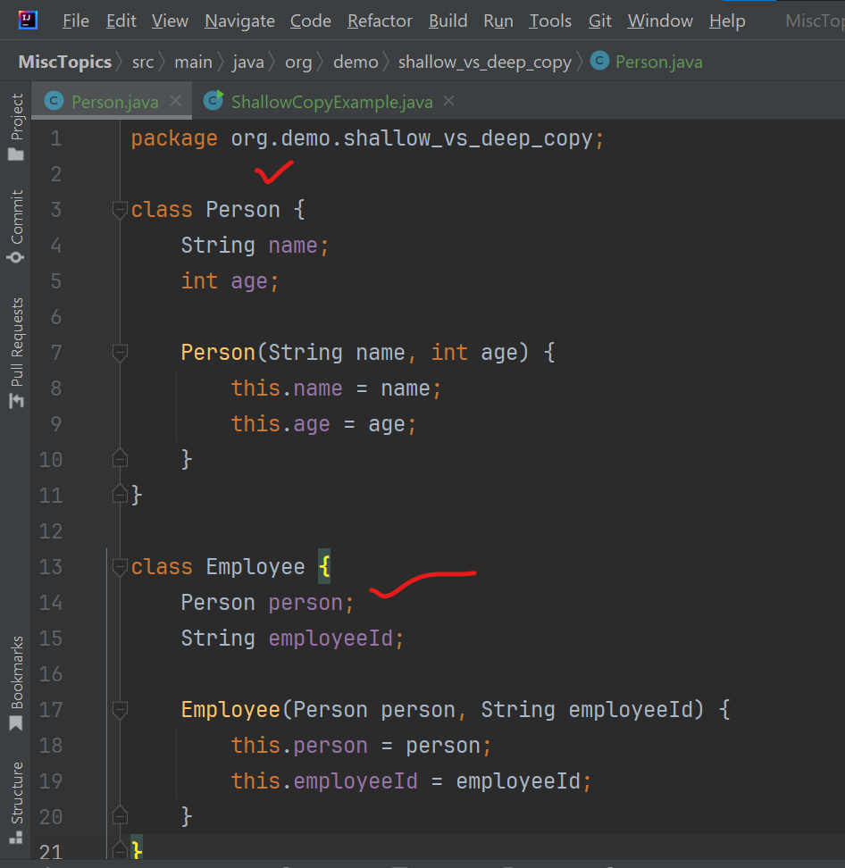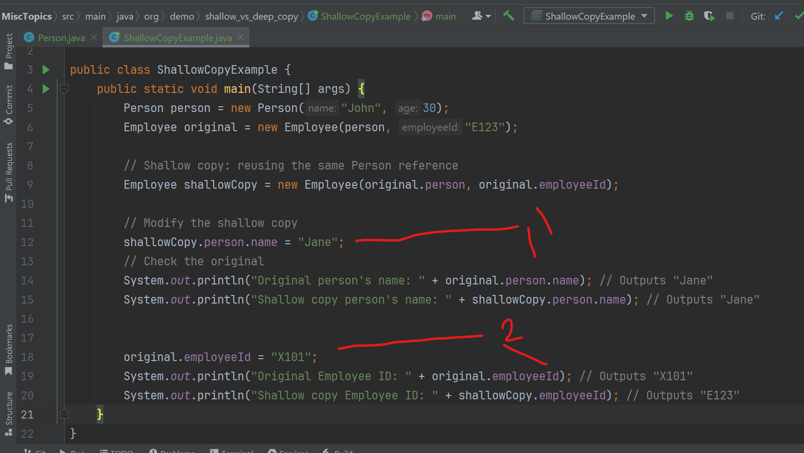
1: changing Shallow copy’s person name, also changed the person name of the Original object. This is because both the objects share the same person object reference.
2: here this change had no effect on the shallow copy’s object. This is because shallow copy Copies the top-level fields of the object. This is not referenced.
This coupling is the primary issue with shallow copying: changes in one object inadvertently affect the other when mutable nested objects are involved.
-----------------------------------------------------------------------------------------
How to Implement Deep Copy
To avoid the issues of shallow copying, we need to implement a deep copy, ensuring that all nested objects are duplicated. There are several approaches to achieve this in Java:
Using a Copy Constructor
Using the Cloneable Interface and clone() Method
Using Serialization
Using External Libraries (e.g., Apache Commons Lang, Jackson, GSON)
-----------------------------------------------------------------------------------------
1. Using a Copy Constructor
-----------------------------------------------------------------------------------------
2. Using the Cloneable Interface and clone() Method
-----------------------------------------------------------------------------------------
3. Using Serialization
-----------------------------------------------------------------------------------------
4. Using External Libraries (e.g., Apache Commons Lang, Jackson, GSON)
----------------------------------------------------------------------------------------------------------
----------------------------------------------------------------------------------------------------------
----------------------------------------------------------------------------------------------------------
----------------------------------------------------------------------------------------------------------
How to Create an Immutable Class in Java? And when to use it?
A.
An immutable class in Java is a class whose instances cannot be modified after creation.
Steps to make a class as an immutable class:
Step 1: Declare the Class as “final”
Step 2: Make All Fields “private” and “final”
Step 3: Initialize All Fields via a public Constructor
Step 4: Do Not Provide Setter Methods
Step 5: Perform Defensive Copies for Mutable Objects
--------------------------------------------------------------------------------------------------------
Step 1: Declare the Class as “final”
Marking the class as final prevents it from being subclassed, which helps in preserving immutability.
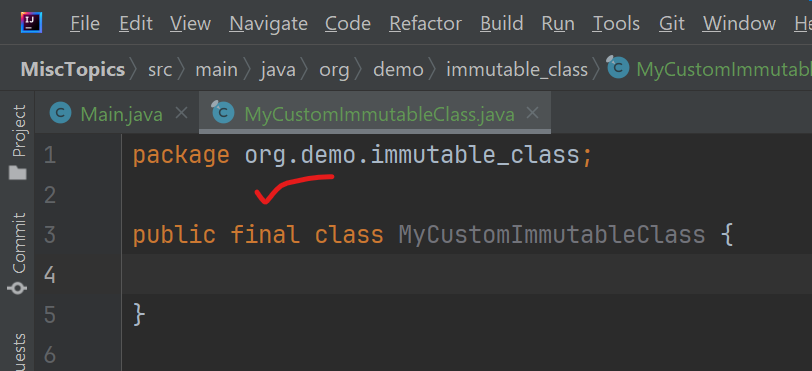
--------------------------------------------------------------------------------------------------------
Step 2: Make All Fields “private” and “final”
All instance variables should be declared as private and final so that their values can be assigned only once.
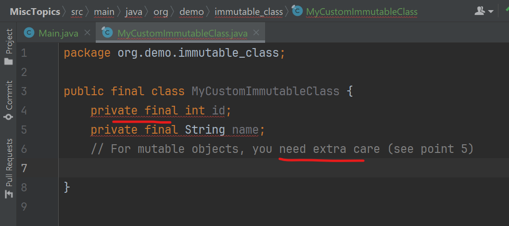
--------------------------------------------------------------------------------------------------------
Step 3: Initialize All Fields via a public Constructor
Provide a public constructor that initializes all fields. Since the fields are final, they can only be assigned once.
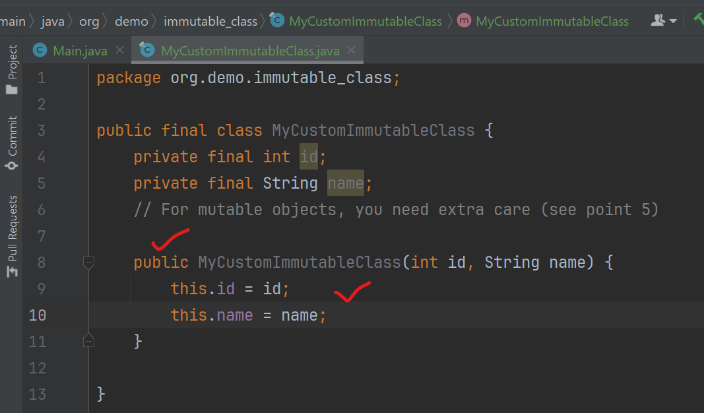
--------------------------------------------------------------------------------------------------------
Step 4: Do Not Provide Setter Methods
Avoid any methods that modify fields or return a reference to mutable objects directly.
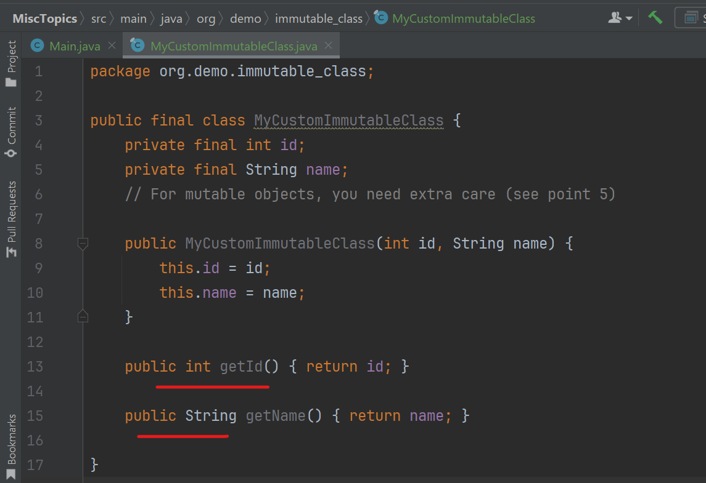
--------------------------------------------------------------------------------------------------------
Step 5: Perform Defensive Copies for Mutable Objects
If your class holds mutable objects (like Date, collections, etc.), create defensive copies in the constructor and in the getter methods.
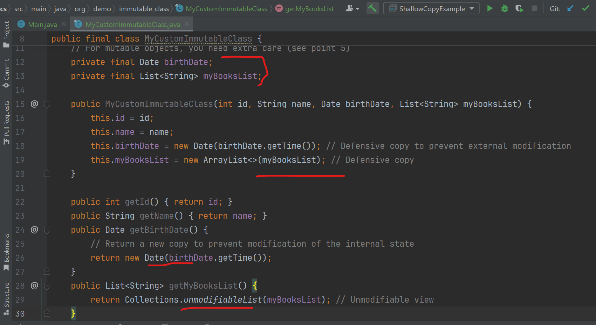
--------------------------------------------------------------------------------------------------------
Several built-in Java classes are immutable by default. These classes do not allow their internal state to be modified after creation, ensuring thread safety and consistency.
Common Immutable Classes in Java
1. String
The String class is one of the most commonly used immutable classes in Java.
Once a String object is created, its value cannot be changed.
1. String s1 = "Hello";
2. String s2 = s1.concat(" World"); // Creates a new String object, does not modify s1
2. Wrapper Classes for Primitive Data Types
All Java wrapper classes for primitive data types are immutable:
Integer, Double, Float, Long, Short, Byte, Character, Boolean
1. Integer num = 10;
2. num = num + 5; // Creates a new Integer object, does not modify `num`
3. BigInteger and BigDecimal
Used for precise arithmetic calculations and large numerical values.
Operations return new objects instead of modifying existing ones.
1. BigInteger bigInt1 = new BigInteger("100");
2. BigInteger bigInt2 = bigInt1.add(new BigInteger("50")); // Returns a new object
4. LocalDate, LocalTime, LocalDateTime (Java 8+)
The Java Time API introduced immutable date-time classes.
Methods return new objects instead of modifying the existing ones.
1. LocalDate date = LocalDate.of(2024, 3, 2);
2. LocalDate newDate = date.plusDays(5); // Returns a new LocalDate object
5. Duration and Period (Java 8+)
Used for time-based calculations.
These classes are immutable.
1. Duration d = Duration.ofHours(5);
2. Duration d2 = d.plusMinutes(30); // Returns a new Duration object
6. Path (Java NIO)
The Path class in java.nio.file is immutable.
Any modification results in a new Path object.
1. Path path = Paths.get("/home/user");
2. Path newPath = path.resolve("documents"); // Returns a new Path object
Why Are These Classes Immutable?
Thread-Safety: Can be shared across threads without synchronization.
Consistency: Prevents accidental modifications.
Cache-Friendly: Objects can be cached and reused.
Security: Prevents external modifications to sensitive data.
These immutable classes are widely used in Java for secure, efficient, and reliable programming. 🚀
--------------------------------------------------------------------------------------------------------
--------------------------------------------------------------------------------------------------------
What happens if we do not follow the steps:
--------------------------------------------------------------------------------------------------------
Step 1: Declare the Class as “final”
Below is a concise example that demonstrates how omitting the final keyword allows subclassing, which can break the intended immutability:
1. // An "immutable" class (not declared final)
2. class SimpleImmutable {
3. private final int value;
4.
5. public SimpleImmutable(int value) {
6. this.value = value;
7. }
8.
9. public int getValue() {
10. return value;
11. }
12. }
13.
14. // A subclass that overrides getValue() to return a different (mutable) behavior
15. class MutableSubclass extends SimpleImmutable {
16. private int mutableValue;
17.
18. public MutableSubclass(int value) {
19. super(value);
20. this.mutableValue = value;
21. }
22.
23. // Overriding the getter to change behavior on each call
24. @Override
25. public int getValue() {
26. return ++mutableValue;
27. }
28. }
29.
30. public class Main {
31. public static void main(String[] args) {
32. SimpleImmutable obj1 = new SimpleImmutable(10);
33. System.out.println("SimpleImmutable value: " + obj1.getValue()); // Always returns 10
34.
35. // Using the subclass that breaks immutability
36. SimpleImmutable obj2 = new MutableSubclass(10);
37. System.out.println("MutableSubclass value (first call): " + obj2.getValue()); // Returns 11
38. System.out.println("MutableSubclass value (second call): " + obj2.getValue()); // Returns 12
39. }
40. }
41.
Explanation
SimpleImmutable: Intended to be immutable, its value is set once and always returns 10 via getValue().
MutableSubclass: Because SimpleImmutable is not declared final, it can be subclassed. Here, MutableSubclass overrides getValue() so that each call changes the returned value.
This simple code illustrates why declaring an immutable class as final is important—to prevent subclassing that could undermine immutability.
--------------------------------------------------------------------------------------------------------
Step 2: Make All Fields “private” and “final”
Below is a simple code example demonstrating what can happen if you do not make all fields private and final. In this example, the field is declared as public (and not final), which allows external code to modify the internal state, thus breaking immutability.
1. // A class intended to be immutable but not using private and final for its field
2. class BadImmutable {
3. // Not declared private or final
4. public int value;
5.
6. public BadImmutable(int value) {
7. this.value = value;
8. }
9.
10. public int getValue() {
11. return value;
12. }
13. }
14.
15. public class Main {
16. public static void main(String[] args) {
17. BadImmutable obj = new BadImmutable(10);
18. System.out.println("Before modification: " + obj.getValue()); // 10
19.
20. // Directly modifying the public field
21. obj.value = 20;
22. System.out.println("After modification: " + obj.getValue()); // 20
23. }
24. }
25.
Explanation
Without private: The field value is accessible from outside the class, so external code (like in the main method) can directly change its value.
Without final: Even if the field were private, not marking it as final would allow the field to be reassigned within the class, potentially compromising immutability.
This simple example shows that if you don't make the fields private and final, the internal state can be modified, defeating the purpose of having an immutable class.
--------------------------------------------------------------------------------------------------------
Step 3: Initialize All Fields via a public Constructor
Below is a short example demonstrating what might happen if you don't initialize all fields via a constructor. In this "bad" example, a default constructor is used (leaving fields uninitialized) and public setters are available, allowing the object's state to change after creation:
1. // A class intended to be immutable but missing a proper constructor
2. class BadImmutable {
3. // Fields are not initialized via a constructor
4. private int id;
5. private String name;
6.
7. // Default constructor (does not set id or name)
8. public BadImmutable() { }
9.
10. public int getId() { return id; }
11. public String getName() { return name; }
12.
13. // Public setters allow modification of the internal state
14. public void setId(int id) { this.id = id; }
15. public void setName(String name) { this.name = name; }
16. }
17.
18. public class Main {
19. public static void main(String[] args) {
20. // Create an instance using the default constructor
21. BadImmutable obj = new BadImmutable();
22.
23. // Initially, fields have default values (0 for int, null for String)
24. System.out.println("Initial state:");
25. System.out.println("ID: " + obj.getId()); // Output: 0
26. System.out.println("Name: " + obj.getName()); // Output: null
27.
28. // Now modify the object state using setters
29. obj.setId(100);
30. obj.setName("Modified");
31.
32. System.out.println("\nAfter modification:");
33. System.out.println("ID: " + obj.getId()); // Output: 100
34. System.out.println("Name: " + obj.getName()); // Output: Modified
35. }
36. }
37.
Explanation
Without a proper constructor: The fields id and name are not set during object creation. Instead, they rely on default values and can be changed later using public setter methods.
Mutable State: Because setters are available and fields aren’t initialized once and for all, the object’s state can be modified after its creation, defeating immutability.
Using a constructor to initialize all fields and avoiding setters (and making fields private and final) ensures the object remains immutable.
--------------------------------------------------------------------------------------------------------
Step 4: Do Not Provide Setter Methods
Below is a simple code example demonstrating what happens if setter methods are provided. With setters, the object's state can be modified after creation, which violates immutability.
1. // A class intended to be immutable but with setter methods added
2. class BadImmutable {
3. private int id;
4. private String name;
5.
6. public BadImmutable(int id, String name) {
7. this.id = id;
8. this.name = name;
9. }
10.
11. // Getters to access the fields
12. public int getId() {
13. return id;
14. }
15. public String getName() {
16. return name;
17. }
18.
19. // Setter methods allow modification of the fields, breaking immutability
20. public void setId(int id) {
21. this.id = id;
22. }
23. public void setName(String name) {
24. this.name = name;
25. }
26. }
27.
28. public class Main {
29. public static void main(String[] args) {
30. BadImmutable obj = new BadImmutable(1, "Original");
31.
32. // Print the initial state
33. System.out.println("Initial state: id=" + obj.getId() + ", name=" + obj.getName());
34.
35. // Use setters to modify the object's state
36. obj.setId(2);
37. obj.setName("Modified");
38.
39. // The state is now changed, showing that the object is mutable
40. System.out.println("Modified state: id=" + obj.getId() + ", name=" + obj.getName());
41. }
42. }
43.
Explanation
Without Setters (Immutable Design): An immutable class does not provide setters so that once an object is created, its state cannot change.
With Setters (Mutable Behavior): In this example, providing setId() and setName() allows external code to modify the internal state of the object after its creation. This means the object's state is no longer fixed, and it becomes mutable.
By including setters, you lose the benefits of immutability such as thread-safety and predictability.
--------------------------------------------------------------------------------------------------------
Step 5: Perform Defensive Copies for Mutable Objects
Below is a short example demonstrating what happens if you do not perform defensive copies for mutable objects. In this case, a mutable Date object is passed to the constructor and stored directly. As a result, any external changes to the Date (or modifications to the object returned by the getter) will affect the internal state of the class.
1. import java.util.Date;
2.
3. class BadImmutable {
4. private final Date birthDate;
5.
6. public BadImmutable(Date birthDate) {
7. // Direct assignment without creating a defensive copy.
8. this.birthDate = birthDate;
9. }
10.
11. public Date getBirthDate() {
12. // Returning the mutable Date directly.
13. return birthDate;
14. }
15. }
16.
17. public class Main {
18. public static void main(String[] args) {
19. Date date = new Date();
20. BadImmutable obj = new BadImmutable(date);
21.
22. System.out.println("Initial birth date: " + obj.getBirthDate());
23.
24. // Modify the original Date object after passing it to the constructor.
25. date.setTime(0);
26. System.out.println("After modifying the external Date: " + obj.getBirthDate());
27.
28. // Also, modify the Date returned by the getter.
29. Date retrievedDate = obj.getBirthDate();
30. retrievedDate.setTime(1000000000);
31. System.out.println("After modifying the retrieved Date: " + obj.getBirthDate());
32. }
33. }
34.
Explanation
Without Defensive Copying: The BadImmutable class stores the mutable Date object directly without making a defensive copy. This means that any changes to the original Date or the object returned by getBirthDate() will affect the internal state of BadImmutable.
External Modification: In the main method, modifying the date object (passed into the constructor) changes the internal state of obj.
Getter Exposure: Similarly, changes made to the Date object returned by getBirthDate() also modify the internal state.
This example clearly shows that without defensive copying, the immutability of the class is compromised because its internal mutable objects can be altered from outside the class.
----------------------------------------------------------------------------------------------------------
----------------------------------------------------------------------------------------------------------
----------------------------------------------------------------------------------------------------------
----------------------------------------------------------------------------------------------------------
TD. Can we copy Immutable Objects in Java?
A.
----------------------------------------------------------------------------------------------------------
----------------------------------------------------------------------------------------------------------
----------------------------------------------------------------------------------------------------------
----------------------------------------------------------------------------------------------------------
TD. Java Thread Pool vs String Pool
A.
----------------------------------------------------------------------------------------------------------
----------------------------------------------------------------------------------------------------------
----------------------------------------------------------------------------------------------------------
----------------------------------------------------------------------------------------------------------
StringBuilder vs StringBuffer vs String
A.
References:
https://www.digitalocean.com/community/tutorials/string-vs-stringbuffer-vs-stringbuilder
String vs StringBuffer vs StringBuilder
String class represents character strings, we can instantiate String in two ways.
1. String str = "ABC";
2. // or
3. String str = new String("ABC");
4.
String is immutable in Java. So, it is suitable to use in a multi-threaded environment. We can share it across functions because there is no concern of data inconsistency.
Let’s see this in action:
Setup:
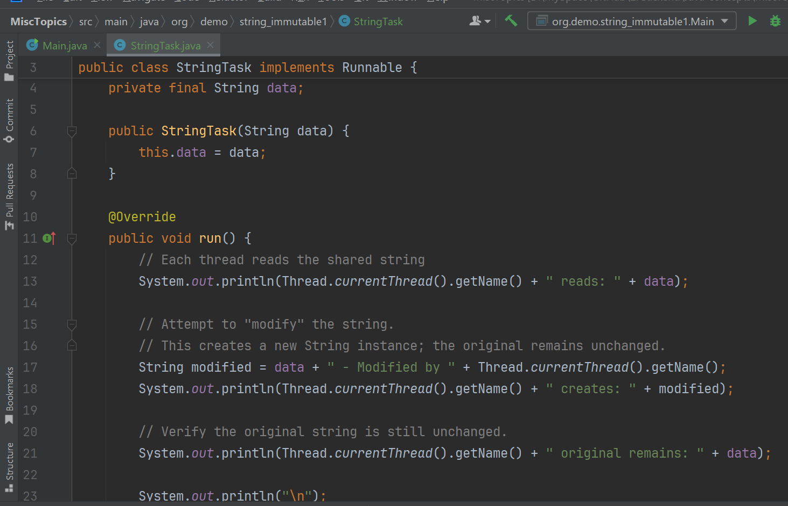
Main method:
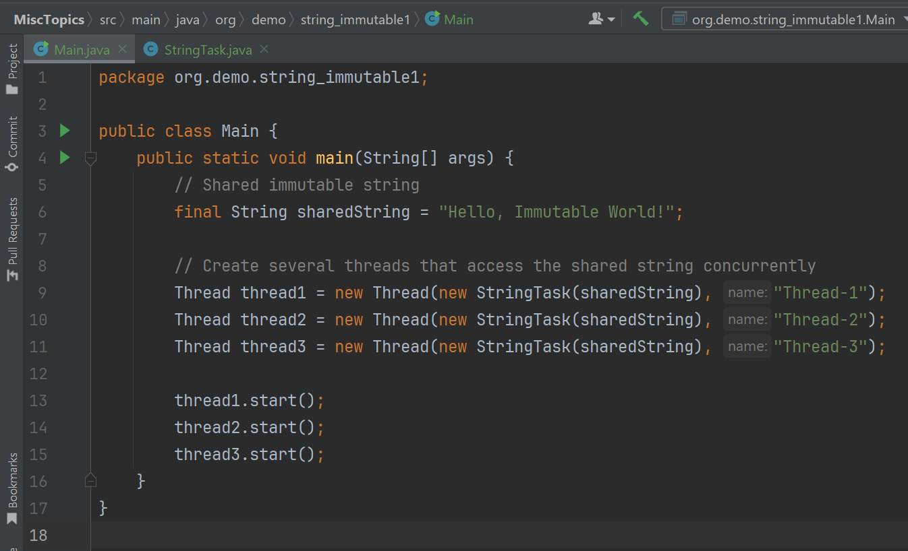
Output:
We can observe 2 things here:
1. each thread reads the original string value
2. after each thread operation also, the original string value remains the same
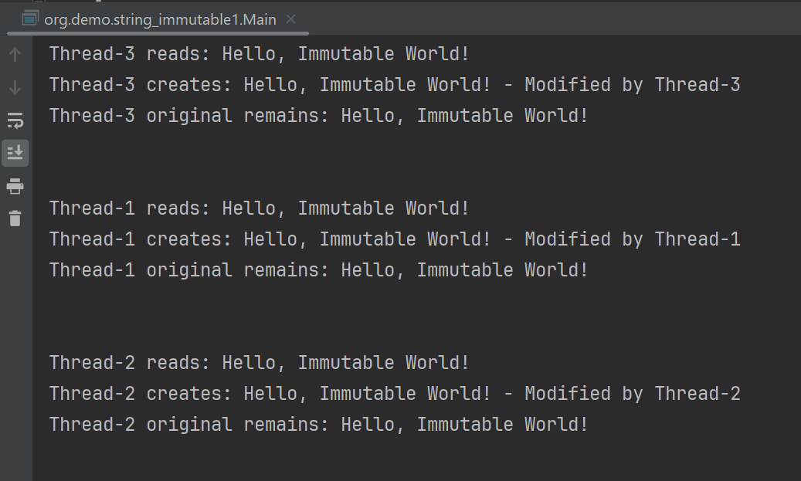
When we create a String using double quotes, JVM first looks for the String with the same value in the string pool. If found, it returns the reference of the string object from the pool. Otherwise, it creates the String object in the String pool and returns the reference. JVM saves a lot of memory by using the same String in different threads.
If the new operator is used to create a string, it gets created in the heap memory.
The + operator is overloaded for String. We can use it to concatenate two strings. Although internally it uses StringBuffer to perform this action.
String overrides equals() and hashCode() methods. Two Strings are equal only if they have the same character sequence. The equals() method is case sensitive. If you are looking for case insensitive checks, you should use equalsIgnoreCase() method.
The string uses UTF-16 encoding for the character stream.
String is a final class. All the fields as final except “private int hash”. This field contains the hashCode() function value. The hashcode value is calculated only when the hashCode() method is called for the first time and then cached in this field. Furthermore, the hash is generated using the final fields of String class with some calculations. So every time the hashCode() method is called, it will result in the same output. For the caller, it seems like calculations are happening every time but internally it’s cached in the hash field.
Since String is immutable in Java, whenever we do String manipulation like concatenation, substring, etc. it generates a new String and discards the older String for garbage collection. These are heavy operations and generate a lot of garbage in heap. So, Java has provided StringBuffer and StringBuilder classes that should be used for String manipulation. StringBuffer and StringBuilder are mutable objects in Java. They provide append(), insert(), delete(), and substring() methods for String manipulation.
StringBuffer was the only choice for String manipulation until Java 1.4. But, it has one disadvantage that all of its public methods are synchronized. StringBuffer provides Thread safety but at a performance cost. In most of the scenarios, we don’t use String in a multithreaded environment. So, Java 1.5 introduced a new class StringBuilder, which is similar to StringBuffer except for thread-safety and synchronization. StringBuffer has some extra methods such as substring, length, capacity, trimToSize, etc. However, these are not required since you have all these present in String too. That’s why these methods were never implemented in the StringBuilder class. StringBuffer was introduced in Java 1.0 whereas StringBuilder class was introduced in Java 1.5 after looking at shortcomings of StringBuffer. If you are in a single-threaded environment or don’t care about thread safety, you should use StringBuilder. Otherwise, use StringBuffer for thread-safe operations.
StringBuilder vs StringBuffer Performance
I am trying to check the effect on performance because of synchronization with a sample program that performs append() on StringBuffer and StringBuilder object for multiple times.
1. package com.journaldev.java;
2.
3. import java.util.GregorianCalendar;
4.
5. public class TestString {
6.
7. public static void main(String[] args) {
8. System.gc();
9. long start=new GregorianCalendar().getTimeInMillis();
10. long startMemory=Runtime.getRuntime().freeMemory();
11. StringBuffer sb = new StringBuffer();
12. //StringBuilder sb = new StringBuilder();
13. for(int i = 0; i<10000000; i++){
14. sb.append(":").append(i);
15. }
16. long end=new GregorianCalendar().getTimeInMillis();
17. long endMemory=Runtime.getRuntime().freeMemory();
18. System.out.println("Time Taken:"+(end-start));
19. System.out.println("Memory used:"+(startMemory-endMemory));
20. }
21. }
22.
I ran the same code for the StringBuffer object also to check the time and memory values. I have executed the code 5 times for each case and then calculated the average values.
Value of i | StringBuffer (Time, Memory) | StringBuilder (Time, Memory) |
10,00,000 | 808, 149356704 | 633, 149356704 |
1,00,00,000 | 7448, 147783888 | 6179, 147783888 |
It is clear that StringBuilder performs better than StringBuffer even in the case of a single-threaded environment. This difference in performance can be caused by synchronization in StringBuffer methods.
String vs StringBuffer vs StringBuilder
String is immutable whereas StringBuffer and StringBuilder are mutable classes.
StringBuffer is thread-safe and synchronized whereas StringBuilder is not. That’s why StringBuilder is faster than StringBuffer.
String concatenation operator (+) internally uses StringBuffer or StringBuilder class.
For String manipulations in a non-multi threaded environment, we should use StringBuilder else use StringBuffer class.
That’s all for a quick roundup of difference between String, StringBuffer, and StringBuilder. StringBuilder is better suited than StringBuffer in most of the general programming scenarios.
----------------------------------------------------------------------------------------------------------
----------------------------------------------------------------------------------------------------------
----------------------------------------------------------------------------------------------------------
----------------------------------------------------------------------------------------------------------
TD. What is meant by “Java Strings are immutable”?
References: https://www.youtube.com/watch?v=Bj9Mx_Lx3q4&t=1s
String a = new String("Hello"); vs String a = "Hello";
A.
When you write:
1. String a = new String("Hello");
...a new String object is created in memory, regardless of whether the string literal "Hello" already exists in the string pool.
In contrast, when you write:
1. String a = "Hello";
...the string literal "Hello" is placed in the string pool. If an identical string already exists there, the reference is reused rather than creating a new object.
Key Differences
Memory Allocation:
new String("Hello"): Always creates a new object on the heap.
"Hello" Literal: Uses the interned string from the string pool, reducing memory footprint.
Reference Equality:
Using == to compare a string created with new String("Hello") and a literal "Hello" will return false since they reference different objects, even though their content is identical.
Performance:
Reusing literals via the string pool can be more efficient, as it avoids creating duplicate objects.
Example
1. String s1 = new String("Hello");
2. String s2 = "Hello";
3.
4. System.out.println(s1 == s2); // Outputs: false (different references)
5. System.out.println(s1.equals(s2)); // Outputs: true (same content)
6.
7. // Using intern() to force pooling:
8. String s3 = s1.intern();
9. System.out.println(s2 == s3); // Outputs: true (both point to the pooled literal)
10.
----------------------------------------------------------------------------------------------------------
----------------------------------------------------------------------------------------------------------
----------------------------------------------------------------------------------------------------------
----------------------------------------------------------------------------------------------------------
== vs .equals() while comparing two objects?
A.
In Java, the == operator and the .equals() method are used for comparisons, but they serve different purposes:
== Operator:
Reference Comparison: For objects, == checks if both references point to the exact same memory location.
Primitive Comparison: When used with primitive types (like int, char, etc.), it compares the actual values.
.equals() Method:
Logical/Content Comparison: The .equals() method is intended to compare the content or state of two objects.
Overridable: By default (as defined in the Object class), .equals() behaves like == (i.e., it checks reference equality). However, many classes (like String, Integer, etc.) override this method to provide a logical equality check.
Example
1. String a = new String("Hello");
2. String b = new String("Hello");
3.
4. // Using '==': compares memory addresses, so this is false
5. System.out.println(a == b); // Output: false
6.
7. // Using '.equals()': compares the content of the strings, so this is true
8. System.out.println(a.equals(b)); // Output: true
9.
Key Takeaways
Use == when you need to check if two references point to the same object instance.
Use .equals() when you want to check if two objects are logically equivalent based on their state or content.
Always consider overriding .equals() (and hashCode()) in your custom classes if you want to define what it means for two instances to be "equal."
This distinction is critical for ensuring that your Java programs compare objects correctly, especially when dealing with collections or custom objects.
More Examples:
1. String a = new String("Hello"); 2. String b = new String("Hello"); 3. // Using '==': compares memory addresses, so this is false 4. System.out.println(a == b); // Output: false 5. // Using '.equals()': compares the content of the strings, so this is true 6. System.out.println(a.equals(b)); // Output: true
String a = "Hello"; String b = "Hello"; // Using '==': compares memory addresses System.out.println(a == b); // Output: true // Using '.equals()': compares the content System.out.println(a.equals(b)); // Output: true
String a = new String("Hello"); String b = "Hello"; // Using '==': compares memory addresses System.out.println(a == b); // Output: false // Using '.equals()': compares the content System.out.println(a.equals(b)); // Output: true
----------------------------------------------------------------------------------------------------------
----------------------------------------------------------------------------------------------------------
----------------------------------------------------------------------------------------------------------
----------------------------------------------------------------------------------------------------------
String .isEmpty() vs isBlank()
A.
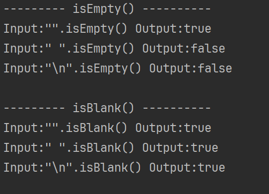
isEmpty() This method returns true only if the string's length is zero. That means it checks if the string contains any characters at all. For example, "" (an empty string) is considered empty, while " " (a string with a space) or "\n" (a string with a newline) are not empty because they contain whitespace characters.
isBlank() Introduced in Java 11, this method returns true if the string is either empty or contains only whitespace characters. Thus, not only does "" return true, but strings like " " and "\n" also return true because all their characters are considered whitespace.
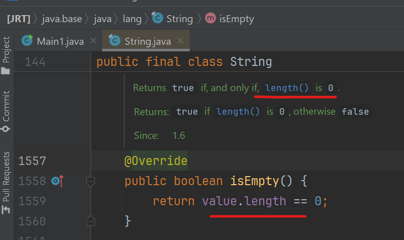
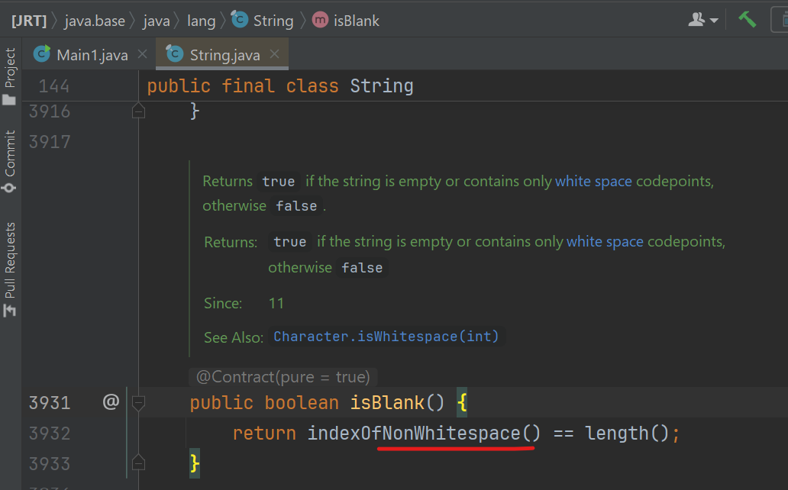
Note:
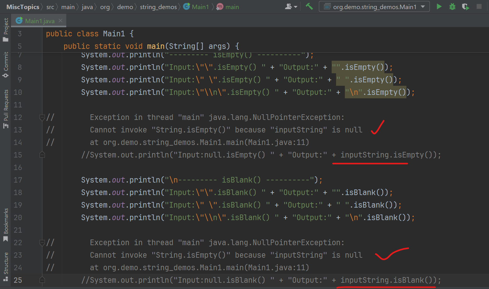If the input String is “null”, then in both cases it will throw an Exception.
----------------------------------------------------------------------------------------------------------
----------------------------------------------------------------------------------------------------------
----------------------------------------------------------------------------------------------------------
----------------------------------------------------------------------------------------------------------
What is try with resources?
A.
Reference:
https://www.baeldung.com/java-try-with-resources
Support for try-with-resources — introduced in Java 7 — allows us to declare resources to be used in a try block with the assurance that the resources will be closed after the execution of that block.
The resources declared need to implement the AutoCloseable interface.
The simple and obvious way to use the new try-with-resources functionality is to replace the traditional and verbose try-catch-finally block.
Traditional and verbose try-catch-finally block:
1. import java.io.BufferedReader;
2. import java.io.FileReader;
3. import java.io.IOException;
4.
5. public class TraditionalTryCatch {
6. public static void main(String[] args) {
7. BufferedReader reader = null;
8. try {
9. reader = new BufferedReader(new FileReader("file.txt"));
10. String line = reader.readLine();
11. System.out.println(line);
12. } catch (IOException e) {
13. e.printStackTrace();
14. } finally {
15. if (reader != null) {
16. try {
17. reader.close();
18. } catch (IOException e) {
19. e.printStackTrace();
20. }
21. }
22. }
23. }
24. }
25.
New try-with-resources functionality:
1. import java.io.BufferedReader;
2. import java.io.FileReader;
3. import java.io.IOException;
4.
5. public class TryWithResourcesExample {
6. public static void main(String[] args) {
7. try (BufferedReader reader = new BufferedReader(new FileReader("file.txt"))) {
8. String line = reader.readLine();
9. System.out.println(line);
10. } catch (IOException e) {
11. e.printStackTrace();
12. }
13. }
14. }
15.
try-with-resources With Multiple Resources
1. import java.io.BufferedReader;
2. import java.io.FileReader;
3. import java.io.IOException;
4.
5. public class MultipleResourcesExample {
6. public static void main(String[] args) {
7. // Both resources will be automatically closed when the try block is exited
8. try (
9. BufferedReader reader1 = new BufferedReader(new FileReader("file1.txt"));
10. BufferedReader reader2 = new BufferedReader(new FileReader("file2.txt"))
11. ) {
12. // Read a line from the first file
13. String line1 = reader1.readLine();
14. System.out.println("File1: " + line1);
15.
16. // Read a line from the second file
17. String line2 = reader2.readLine();
18. System.out.println("File2: " + line2);
19. } catch (IOException e) {
20. e.printStackTrace();
21. }
22. }
23. }
24.
A Custom Resource with AutoCloseable
To construct a custom resource that will be correctly handled by a try-with-resources block, the class should implement the Closeable or AutoCloseable interfaces and override the close method:
1. public class CustomResource implements AutoCloseable {
2. public CustomResource() {
3. System.out.println("CustomResource: Resource created.");
4. }
5.
6. public void doSomething() {
7. System.out.println("CustomResource: Performing an operation.");
8. }
9.
10. @Override
11. public void close() {
12. System.out.println("CustomResource: Resource closed automatically.");
13. }
14. }
15.
1. public class CustomResourceExample {
2. public static void main(String[] args) {
3. // The custom resource is automatically closed at the end of this try block.
4. try (CustomResource resource = new CustomResource()) {
5. resource.doSomething();
6. } catch (Exception e) {
7. e.printStackTrace();
8. }
9. }
10. }
11.
Resource Closing Order
Resources that were defined/acquired first will be closed last. Let’s look at an example of this behavior:
Resource 1:
1. public class AutoCloseableResourcesFirst implements AutoCloseable {
2.
3. public AutoCloseableResourcesFirst() {
4. System.out.println("Constructor -> AutoCloseableResources_First");
5. }
6.
7. public void doSomething() {
8. System.out.println("Something -> AutoCloseableResources_First");
9. }
10.
11. @Override
12. public void close() throws Exception {
13. System.out.println("Closed AutoCloseableResources_First");
14. }
15. }
16.
Resource 2:
1. public class AutoCloseableResourcesSecond implements AutoCloseable {
2.
3. public AutoCloseableResourcesSecond() {
4. System.out.println("Constructor -> AutoCloseableResources_Second");
5. }
6.
7. public void doSomething() {
8. System.out.println("Something -> AutoCloseableResources_Second");
9. }
10.
11. @Override
12. public void close() throws Exception {
13. System.out.println("Closed AutoCloseableResources_Second");
14. }
15. }
16.
Code:
1. private void orderOfClosingResources() throws Exception {
2. try (AutoCloseableResourcesFirst af = new AutoCloseableResourcesFirst();
3. AutoCloseableResourcesSecond as = new AutoCloseableResourcesSecond()) {
4.
5. af.doSomething();
6. as.doSomething();
7. }
8. }
9.
Output:
Constructor -> AutoCloseableResources_First Constructor -> AutoCloseableResources_Second
Something -> AutoCloseableResources_First Something -> AutoCloseableResources_Second
Closed AutoCloseableResources_Second Closed AutoCloseableResources_First
Catch and finally
A try-with-resources block can still have the catch and finally blocks, which will work in the same way as with a traditional try block.
Java 9 – Effectively Final Variables
Before Java 9, we could only use fresh variables inside a try-with-resources block:
1. try (Scanner scanner = new Scanner(new File("testRead.txt"));
2. PrintWriter writer = new PrintWriter(new File("testWrite.txt"))) {
3. // omitted
4. }
As shown above, this was especially verbose when declaring multiple resources. As of Java 9 and as part of JEP 213, we can now use final or even effectively final variables inside a try-with-resources block:
1. final Scanner scanner = new Scanner(new File("testRead.txt"));
2. PrintWriter writer = new PrintWriter(new File("testWrite.txt"))
3. try (scanner;writer) {
4. // omitted
5. }
Put simply, a variable is effectively final if it does not change after the first assignment, even though it’s not explicitly marked as final.
As shown above, the scanner variable is declared final explicitly, so we can use it with the try-with-resources block. Although the writer variable is not explicitly final, it does not change after the first assignment. So, we can to use the writer variable too.
----------------------------------------------------------------------------------------------------------
----------------------------------------------------------------------------------------------------------
----------------------------------------------------------------------------------------------------------
----------------------------------------------------------------------------------------------------------
How to create a singleton class in Java?
What are the ways to break this singleton pattern?
A.
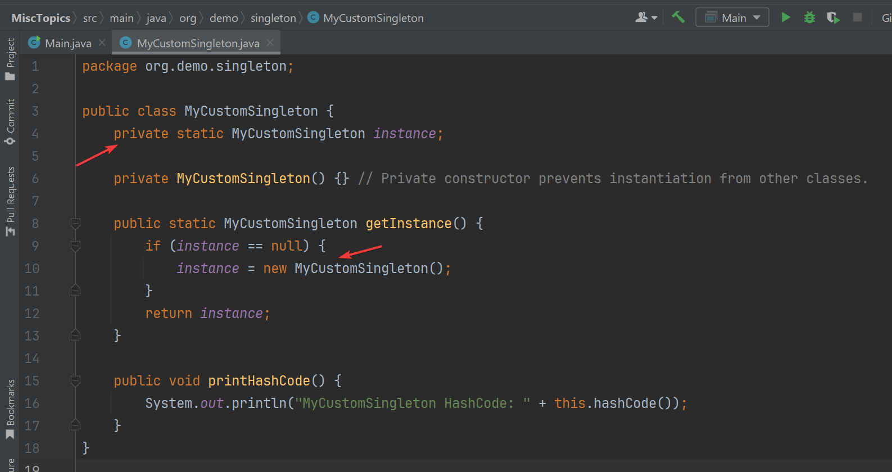
Initially created a lazy initialised singleton class.
Here, simply we are checking if the instance is null, then only we will create a new instance of this class.
Here, we also have a private constructor to avoid instantiations from other classes.
Output so far:
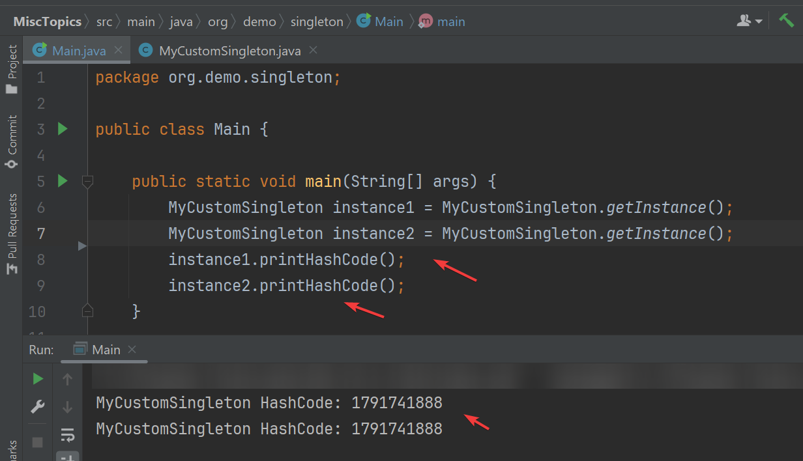Here we have created 2 instances of the class and checked both the instances have the same HashCode, means both are pointing to the same instance.
Final Notes:
Multithreading: Without proper synchronization (or double-checked locking with a volatile field), multiple threads can create multiple instances.
Reflection: Without a guard in the constructor, reflection can bypass the singleton logic.
Serialization: Without a readResolve() method, deserialization creates a new instance.
Cloning: Allowing cloning (via Cloneable) can result in duplicate instances.
These are the 4 ways to break the singleton pattern.
1. Making the Singleton Thread-Safe
But this code so far is not thread safe.
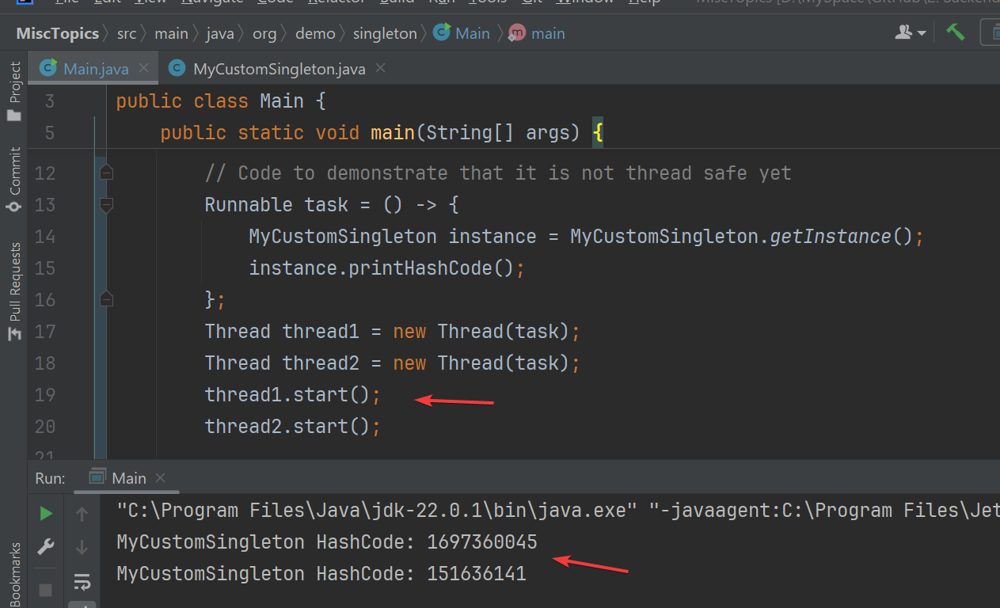Why Is This Not Thread-Safe?
If two threads access getInstance() at the same time when instance is still null, both might create separate instances of MyCustomSingleton.
This happens due to a race condition.
Let’s make it thread-safe now:
Option A: Synchronized Method
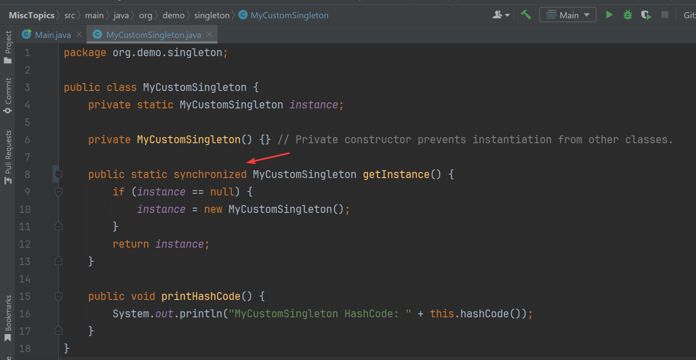 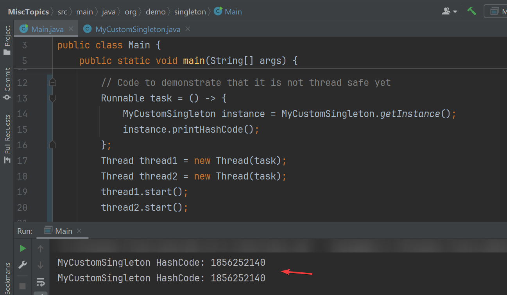Now we can see we are getting a singleton class instance as both the instances has the same HashCode.
But a major drawback in this way is that the entire method is synchronized, which can reduce performance. For example, if we have 100 threads accessing the getInstance() method, then at time only 1 thread is allowed to enter inside the method, which can significantly reduce the performance.
Let’s check next how we can improve this to block the threads only when the instance is null and not for other cases.
Let’s fix it now.
Option B: Double-Checked Locking with volatile
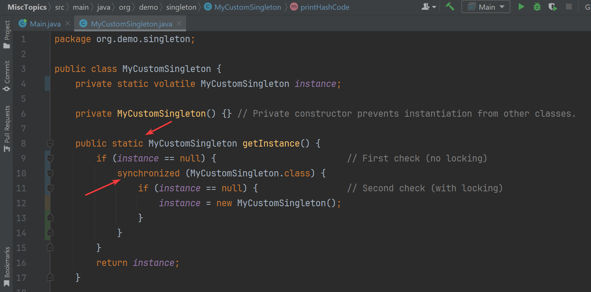Here, first we removed the method level “synchronised”.
Then applied the synchronised block only if the instance is null.
Why Does This Work?
volatile ensures that changes to instance are visible across threads.
Double-Checked Locking ensures synchronization only when instance is null, avoiding unnecessary performance overhead.
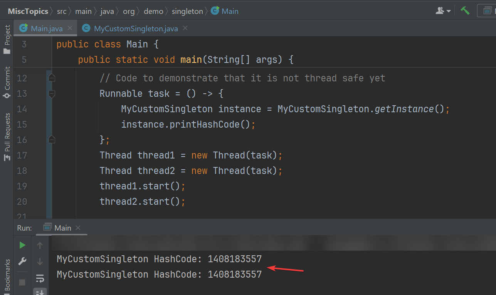
2. Protecting Against Reflection
Reflection can bypass the private constructor and create a new instance.
import java.lang.reflect.Constructor;
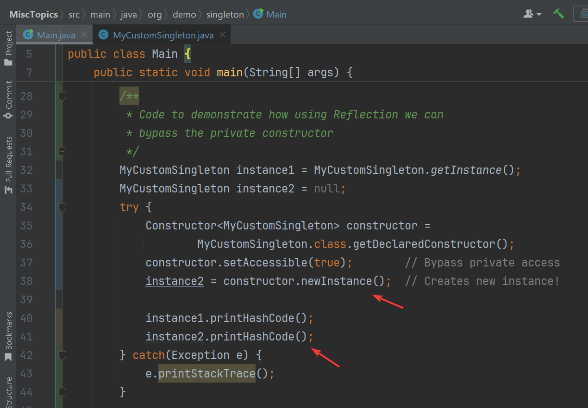Note: it is .newInstance() and not .getInstance()
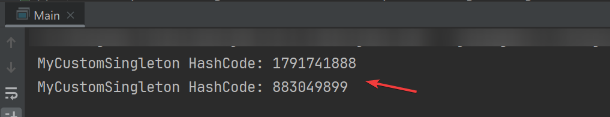
Fix:
Modify the constructor to check if an instance already exists and throw an Exception if it already exists.
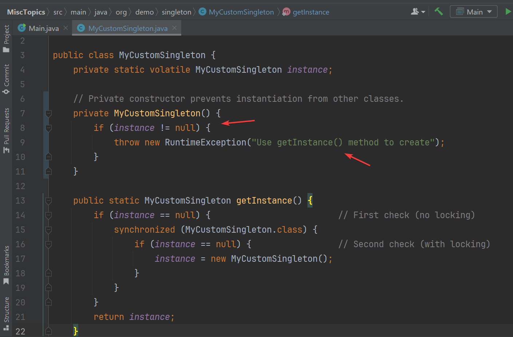 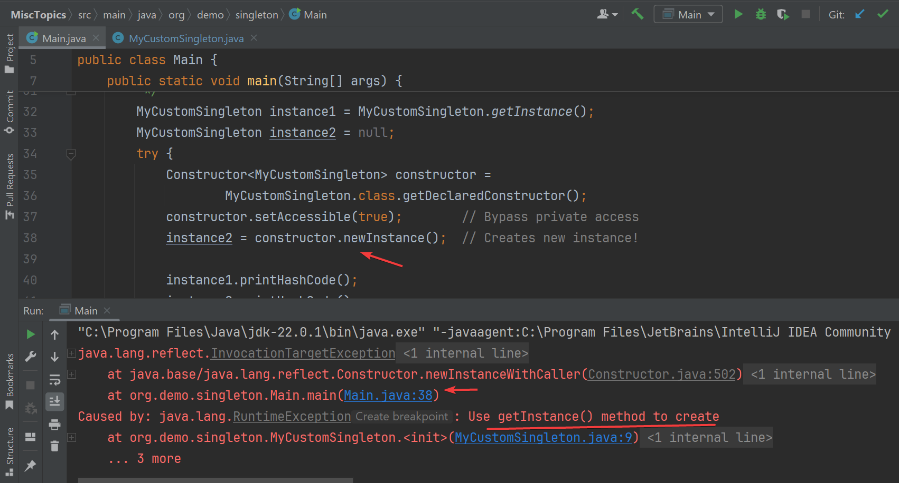Now we will get this exception when we would try to create an instance using Reflection.
3. Protecting Against Serialization
When a singleton implements Serializable, deserializing it can create a new instance.
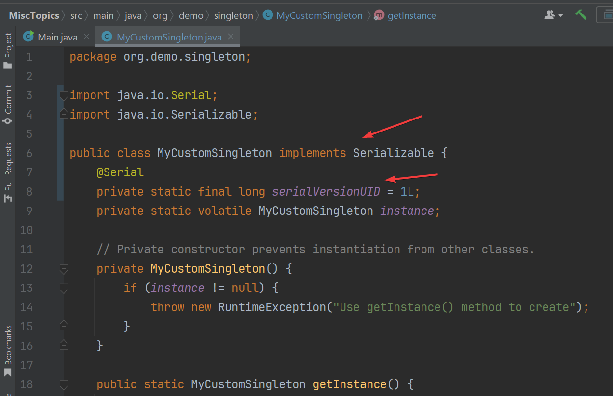 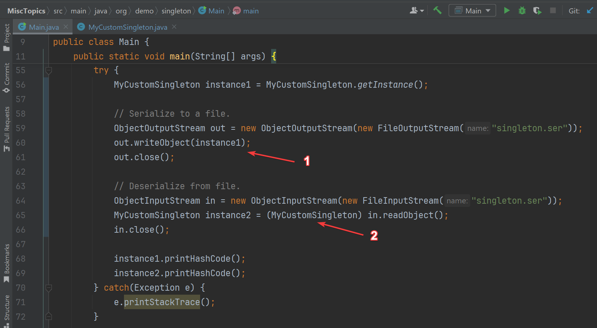1: here first we are creating the instance1 and then writing it to a file.
2: then while reading from the same file, we are type casting it to our single class.
Now let’s see the output:
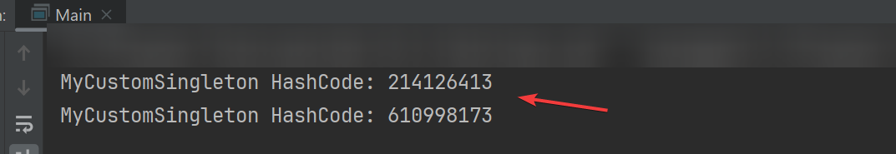
Now, let’s fix it:

Here, simply we have to provide this method readResolve(). And inside it we can simply call our already present getInstance() method which has the thread safety already.
Note:
The readResolve() method is a special hook provided by the Java serialization mechanism.
It is a special callback method defined by the Java Object Serialization specification. During deserialization, the Java runtime looks for this method using reflection. If it finds it, the method is invoked to determine what object should be returned.
How readResolve() method Addresses the Issue?
Automatic Invocation Post-Deserialization:
After an object is deserialized, the Java serialization mechanism checks if the class defines a readResolve() method.
If it exists, the method is automatically called on the deserialized object.
Output now:
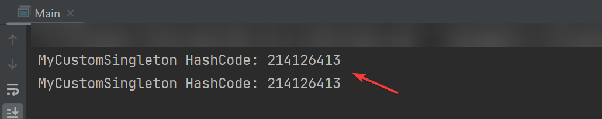
4. Protecting Against Cloning
If our singleton implements Cloneable or inherits a clone() method, cloning can create another instance.
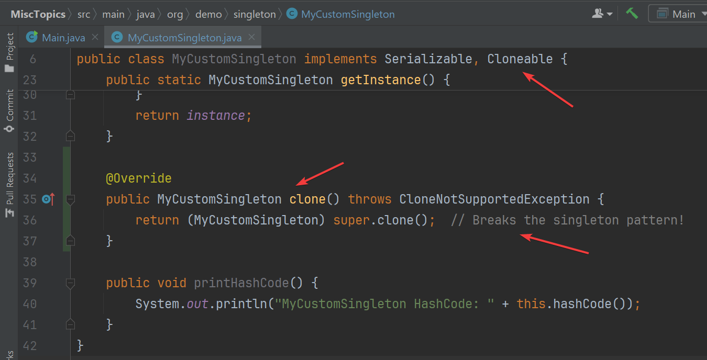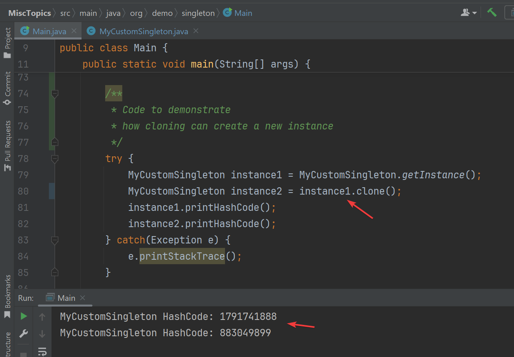
Let’s see how to fix it:
Override the clone() method to prevent cloning:
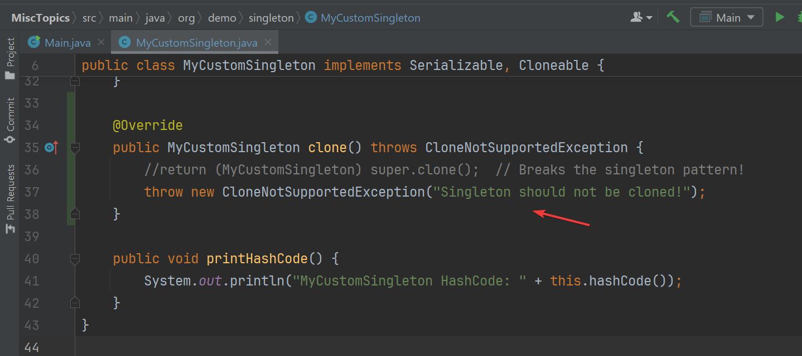 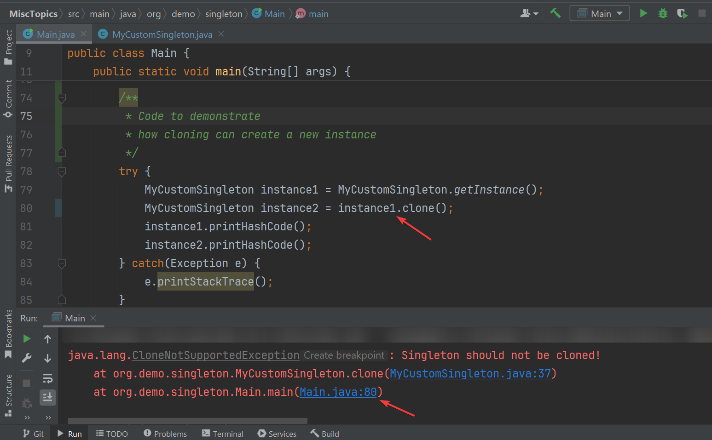
Done!
Final Notes:
Multithreading: Without proper synchronization (or double-checked locking with a volatile field), multiple threads can create multiple instances.
Reflection: Without a guard in the constructor, reflection can bypass the singleton logic.
Serialization: Without a readResolve() method, deserialization creates a new instance.
Cloning: Allowing cloning (via Cloneable) can result in duplicate instances.
Side Note:
Enums in Java are singleton by default and also, we cannot break it’s singleton pattern using the above 4 methods.
----------------------------------------------------------------------------------------------------------
----------------------------------------------------------------------------------------------------------
----------------------------------------------------------------------------------------------------------
----------------------------------------------------------------------------------------------------------
TD. What is Java Profiling?
A.
----------------------------------------------------------------------------------------------------------
----------------------------------------------------------------------------------------------------------
----------------------------------------------------------------------------------------------------------
----------------------------------------------------------------------------------------------------------
----------------------------------------------------------------------------------------------------------
----------------------------------------------------------------------------------------------------------
----------------------------------------------------------------------------------------------------------
----------------------------------------------------------------------------------------------------------
TD. How in Java, it is always pass by value and not pass by reference?
References:
https://www.youtube.com/watch?v=-5NC5_sI-vQ
TD: During serialization process, encountered class is not found, then how to handle this? How to fix it?
--------------------------------------------------------------------------------------------------------
--------------------------------------------------------------------------------------------------------
--------------------------------------------------------------------------------------------------------
QTD. Abstract class vs Interface? When to use which one?
A. TO DO
A class can extend only 1 abstract class but it can implement many interfaces.
----------------------------------------------------------------------------------------------------------
----------------------------------------------------------------------------------------------------------
----------------------------------------------------------------------------------------------------------
----------------------------------------------------------------------------------------------------------
TD: Why were static methods inside an Interface is introduced in Java 8. Tell some practical use cases for this.
--------------------------------------------------------------------------------------------------------
Q. Error vs Exception
A.
Errors
Definition: Errors indicate serious problems that the application typically cannot recover from. These are generally external to the application’s logic and are thrown by the Java Virtual Machine (JVM).
Hierarchy: Errors are subclasses of the java.lang.Error class.
Examples:
OutOfMemoryError: Occurs when the JVM runs out of memory.
StackOverflowError: Occurs when the stack memory allocated to a thread is exceeded, often because of deep or infinite recursion.
Handling: Applications are generally not expected to catch errors because they usually indicate unrecoverable conditions. Instead, they may signal a problem with the runtime environment.
Exceptions
Definition: Exceptions represent conditions that a program might want to catch and handle gracefully. They are usually problems that can occur during normal program execution, such as invalid input or failure to open a file.
Hierarchy: Exceptions are subclasses of the java.lang.Exception class.
Types:
Checked Exceptions:
Must be either caught or declared in the method's throws clause.
Example: FileNotFoundException, IOException
Unchecked Exceptions (Runtime Exceptions):
These are not required to be caught or declared. They generally indicate programming bugs, such as logic errors or improper use of an API.
Example: NullPointerException, ArrayIndexOutOfBoundsException
Handling: Exceptions can be caught using try-catch blocks, allowing the program to recover or take alternative actions when an error condition occurs.
----------------------------------------------------------------------------------------------------------
----------------------------------------------------------------------------------------------------------
----------------------------------------------------------------------------------------------------------
----------------------------------------------------------------------------------------------------------
Q. Why should we avoid catching errors?
A.
Catching errors in Java is generally discouraged because they represent serious problems that your application is not designed to handle.
1. Indication of Serious Problems
System-Level Issues: Errors such as OutOfMemoryError or StackOverflowError are thrown by the JVM to indicate that the system is in a critical state. These issues typically arise from severe resource limitations or programming mistakes (like infinite recursion) that compromise the entire application's stability.
Beyond Application Control: Errors are not meant to be recoverable by application code. Their occurrence usually means that the runtime environment has encountered a problem that falls outside the bounds of normal execution. Attempting to catch such errors might lead to unpredictable behavior because the underlying system may not be in a state to safely continue.
2. Potential for Inconsistent State
Unreliable Program State: When an error occurs, it often means that the JVM's internal state or system resources have been compromised. For example, if an OutOfMemoryError is thrown, it might be impossible to safely allocate further objects or perform operations that depend on memory. Catching the error might allow the program to continue running, but in a corrupted or unpredictable state.
Difficulty in Recovery: Even if you catch an error, there is rarely a safe or meaningful way to recover from it. Unlike exceptions, which might be anticipated and handled (for instance, by retrying a network operation), errors usually signal that something is fundamentally wrong with the environment, and recovery might require restarting the application or even the system.
3. Masking Underlying Issues
Hiding Critical Failures: By catching errors, you risk obscuring serious problems that should be visible to developers or operations teams. If errors are caught and not allowed to propagate, debugging becomes more difficult because the application might continue running in an inconsistent state while the root cause remains unaddressed.
Unintentional Continuation: Handling errors might inadvertently lead the program to continue executing when it should instead terminate. This can lead to further complications, such as data corruption, security vulnerabilities, or more complex failures that are harder to diagnose and fix.
4. Best Practices and JVM Guidelines
Design Philosophy: The Java language differentiates between errors and exceptions to indicate that errors are not meant to be recovered from by typical application logic. The design philosophy behind this is to ensure that critical issues are handled by the JVM or by system-level mechanisms (like logging or graceful shutdown) rather than by the application code itself.
Recommended Approach: Instead of catching errors, it’s better to let them propagate and cause the application to fail fast. This allows your error-handling infrastructure (such as a top-level error handler) to log the problem, perform necessary cleanup, and, if possible, restart the application. This is a more robust strategy than attempting to recover from a state that may be unstable.
Conclusion
Catching errors in Java is discouraged because:
Errors signal critical issues that are beyond the scope of typical application logic.
Recovering from errors is risky due to the potential for inconsistent or corrupted program state.
Catching errors may mask real problems, making them harder to diagnose and resolve.
Best practices dictate that errors should be allowed to propagate, letting the system or dedicated error-handling mechanisms manage them.
----------------------------------------------------------------------------------------------------------
----------------------------------------------------------------------------------------------------------
----------------------------------------------------------------------------------------------------------
----------------------------------------------------------------------------------------------------------
Q. When & how to create a custom exception in Java?
A.
Creating custom exceptions in Java is useful when you need to represent specific error conditions that are not well-described by the standard exceptions provided by the Java API. This practice enhances code clarity and makes error handling more expressive and easier to manage.
When to Create a Custom Exception
Domain-Specific Errors: When the error condition is specific to your application or domain, such as business logic violations (e.g., an invalid order status or a user registration error), a custom exception clearly communicates the problem.
Improved Readability and Maintainability: Custom exceptions allow you to encapsulate error-related information and make your code more readable. Instead of using generic exceptions like Exception or RuntimeException, you can name your exception to reflect the actual issue (e.g., InsufficientFundsException).
Additional Context: When you need to include extra data (like error codes or additional messages) with the exception, a custom exception class is a good choice. This added context can be valuable for logging, debugging, or even for client code to make decisions based on the type of error.
Differentiating Error Types: By defining your own exception hierarchy, you can differentiate between various error conditions, making it easier to handle them selectively using multiple catch blocks.
How to Create a Custom Exception
1. Choose the Right Base Class
Checked Exceptions: If the exception is expected to be recoverable or if it represents a condition that the caller should anticipate, extend the Exception class.
1. public class InvalidUserInputException extends Exception {
2. public InvalidUserInputException(String message) {
3. super(message);
4. }
5.
6. public InvalidUserInputException(String message, Throwable cause) {
7. super(message, cause);
8. }
9. }
10.
Unchecked Exceptions: If the error represents a programming bug or an unexpected condition that the caller is not expected to handle, extend the RuntimeException class.
1. public class ResourceNotFoundException extends RuntimeException {
2. public ResourceNotFoundException(String message) {
3. super(message);
4. }
5.
6. public ResourceNotFoundException(String message, Throwable cause) {
7. super(message, cause);
8. }
9. }
10.
2. Include Constructors
Provide constructors that allow you to pass a descriptive message and optionally, a cause (another Throwable that triggered the exception). This is a best practice because it gives more context about the error.
3. (Optional) Add Custom Methods or Fields
If needed, you can add custom fields or methods to your exception class to hold additional information. For example, you might include an error code:
1. public class InsufficientFundsException extends Exception {
2. private double deficit;
3.
4. public InsufficientFundsException(String message, double deficit) {
5. super(message);
6. this.deficit = deficit;
7. }
8.
9. public double getDeficit() {
10. return deficit;
11. }
12. }
13.
4. Document the Exception
Make sure to include Javadoc comments that explain when the exception is thrown and how it should be used. This documentation will be invaluable for other developers (or your future self) working with the code.
Example Usage
Here is a complete example that demonstrates defining and using a custom checked exception:
1. // Custom checked exception
2. public class InvalidUserInputException extends Exception {
3. public InvalidUserInputException(String message) {
4. super(message);
5. }
6.
7. public InvalidUserInputException(String message, Throwable cause) {
8. super(message, cause);
9. }
10. }
11.
12.
13. public class UserInputValidator {
14. public void validateAndParse(String input) throws InvalidUserInputException {
15. try {
16. // Attempt to parse input to an integer
17. int number = Integer.parseInt(input);
18. // Further processing...
19. } catch (NumberFormatException e) {
20. // Wrap the original error with a custom message
21. throw new InvalidUserInputException("Invalid input provided: " + input, e);
22. }
23. }
24.
25. public static void main(String[] args) {
26. UserInputValidator validator = new UserInputValidator();
27. try {
28. validator.validateAndParse("abc"); // This will fail
29. } catch (InvalidUserInputException e) {
30. System.out.println("Error: " + e.getMessage());
31. // Optionally, get the original error using e.getCause()
32. System.out.println("Original error: " + e.getCause());
33. }
34. }
35. }
36.
----------------------------------------------------------------------------------------------------------
----------------------------------------------------------------------------------------------------------
----------------------------------------------------------------------------------------------------------
----------------------------------------------------------------------------------------------------------
Q. Checked vs Unchecked exception
A.
Java exceptions are broadly classified into two types: checked exceptions and unchecked exceptions. Let’s break down the differences step by step and illustrate with both built-in and custom examples.
0. What Are Exceptions?
Exceptions in Java are events that disrupt the normal flow of the program. They are used to handle errors and other exceptional conditions in a controlled way.
1. Checked Exceptions
Characteristics:
Compile-Time Checking: The compiler enforces that these exceptions are either caught with a try-catch block or declared in the method signature using the throws keyword.
Subclasses: They are subclasses of Exception but not subclasses of RuntimeException.
Use Cases: Typically used for conditions that are outside the control of the program, such as file handling or network operations.
Built-in Example:
A common checked exception is FileNotFoundException, which occurs when an attempt to open a file fails.
Code Example:
1. import java.io.*;
2.
3. public class CheckedExceptionExample {
4. public static void main(String[] args) {
5. try {
6. FileReader file = new FileReader("nonexistentfile.txt");
7. BufferedReader fileInput = new BufferedReader(file);
8.
9. // Read the first line of the file
10. System.out.println(fileInput.readLine());
11. fileInput.close();
12. } catch (FileNotFoundException e) {
13. System.out.println("File not found. Please check the file path.");
14. } catch (IOException e) {
15. System.out.println("An I/O error occurred.");
16. }
17. }
18. }
19.
Explanation: The FileReader constructor can throw a FileNotFoundException, which is a checked exception. The code is forced to handle it either by catching it or declaring it with throws.
Custom Checked Exception:
You can create your own checked exceptions by extending the Exception class.
Code Example:
1. // Define a custom checked exception
2. public class MyCustomCheckedException extends Exception {
3. public MyCustomCheckedException(String message) {
4. super(message);
5. }
6. }
7.
1. // Use the custom checked exception
2. public class CustomCheckedDemo {
3. // Declare that this method may throw MyCustomCheckedException
4. public static void validateAge(int age) throws MyCustomCheckedException {
5. if (age < 18) {
6. throw new MyCustomCheckedException("Age must be 18 or older.");
7. }
8. System.out.println("Age is valid.");
9. }
10.
11. public static void main(String[] args) {
12. try {
13. validateAge(15);
14. } catch (MyCustomCheckedException e) {
15. System.out.println("Validation failed: " + e.getMessage());
16. }
17. }
18. }
19.
Explanation: Here, MyCustomCheckedException must be handled or declared in the method signature because it extends Exception.
2. Unchecked Exceptions
Characteristics:
Runtime Checking: These exceptions are not checked at compile time. They can occur at runtime, and there is no requirement to catch or declare them.
Subclasses: They are either subclasses of RuntimeException or Error. (Errors usually represent serious problems that a reasonable application should not try to catch.)
Use Cases: Typically used for programming errors like logic mistakes or improper use of an API.
Built-in Example:
A common unchecked exception is NullPointerException, which occurs when trying to use an object reference that has not been initialized.
Code Example:
1. public class UncheckedExceptionExample {
2. public static void main(String[] args) {
3. String str = null;
4. // This line will throw a NullPointerException at runtime.
5. System.out.println(str.length());
6. }
7. }
8.
Explanation: There is no compile-time requirement to handle a NullPointerException, but it will crash the program if not managed properly.
Custom Unchecked Exception:
To create your own unchecked exception, extend the RuntimeException class.
Code Example:
1. // Define a custom unchecked exception
2. public class MyCustomUncheckedException extends RuntimeException {
3. public MyCustomUncheckedException(String message) {
4. super(message);
5. }
6. }
7.
1. // Use the custom unchecked exception
2. public class CustomUncheckedDemo {
3. public static void checkValue(int value) {
4. if (value < 0) {
5. throw new MyCustomUncheckedException("Value must be non-negative.");
6. }
7. System.out.println("Value is acceptable.");
8. }
9.
10. public static void main(String[] args) {
11. // No requirement to catch this exception.
12. checkValue(-10);
13. }
14. }
15.
Explanation: MyCustomUncheckedException is a subclass of RuntimeException. You are not forced to catch it, although you can if you want to handle it gracefully.
0. Summary of Key Differences
Compile-Time Checking:
Checked Exceptions: Must be caught or declared (e.g., FileNotFoundException).
Unchecked Exceptions: No compile-time requirement to catch or declare (e.g., NullPointerException).
Usage Context:
Checked Exceptions: Generally used for recoverable conditions that a program can reasonably handle.
Unchecked Exceptions: Used for programming errors, such as logic mistakes or improper API usage.
Custom Exception Creation:
Checked Exception: Extend Exception.
Unchecked Exception: Extend RuntimeException.
This step-by-step explanation and examples should help clarify the differences between checked and unchecked exceptions in Java, as well as how to create and handle both built-in and custom exceptions.
----------------------------------------------------------------------------------------------------------
----------------------------------------------------------------------------------------------------------
----------------------------------------------------------------------------------------------------------
----------------------------------------------------------------------------------------------------------
Q. throw vs throws
A.
In Java, the keywords throw and throws are both used in the context of exception handling, but they serve different purposes. Here is a step-by-step explanation:
1. The throw Keyword
Purpose:
throw is used to explicitly create and throw an exception from a method or block of code.
How It Works:
When you use throw, you are generating an exception object.
This exception is then passed to the Java runtime, which searches for a corresponding catch block to handle it.
throw is usually followed by an instance of Exception or its subclasses.
Example:
1. public class ThrowExample {
2. public static void validateAge(int age) {
3. // Explicitly throwing an exception if the age is less than 18
4. if (age < 18) {
5. throw new IllegalArgumentException("Age must be at least 18.");
6. }
7. System.out.println("Age is valid.");
8. }
9.
10. public static void main(String[] args) {
11. // This call will throw an IllegalArgumentException if age < 18.
12. validateAge(15);
13. }
14. }
15.
Explanation: Here, throw is used inside the validateAge method to create an IllegalArgumentException if the provided age is less than 18.
2. The throws Keyword
Purpose:
throws is used in a method signature to declare that the method might throw one or more exceptions.
It informs the caller of the method that they must handle these exceptions, either by catching them or further declaring them.
How It Works:
throws does not throw an exception itself. Instead, it acts as a warning or declaration.
It is primarily used with checked exceptions that must be handled at compile time.
Example:
1. import java.io.FileNotFoundException;
2. import java.io.FileReader;
3.
4. public class ThrowsExample {
5. // Declares that this method might throw FileNotFoundException
6. public static void readFile(String fileName) throws FileNotFoundException {
7. FileReader file = new FileReader(fileName);
8. // Additional file operations...
9. }
10.
11. public static void main(String[] args) {
12. try {
13. // Since readFile may throw an exception, we catch it here.
14. readFile("nonexistent.txt");
15. } catch (FileNotFoundException e) {
16. System.out.println("File not found.");
17. }
18. }
19. }
20.
Explanation: The readFile method declares with throws that it may throw a FileNotFoundException. This alerts the method’s callers (in this case, the main method) to handle the potential exception.
3. Key Differences Recap
throw:
Action: Actively throws an exception.
Usage: Inside the method/block where the exception condition is met.
Example: throw new IllegalArgumentException("Invalid input");
throws:
Declaration: Indicates that a method might throw one or more exceptions.
Usage: In the method signature.
Example: public void readFile(String fileName) throws FileNotFoundException
4. When to Use Each
Use throw: When you want to explicitly trigger an exception in your code. For example, validating method parameters and throwing an exception when the input is not acceptable.
Use throws: When your method calls other methods that might throw exceptions (especially checked exceptions) and you want to pass the responsibility of handling those exceptions to the caller.
This detailed explanation with examples should help clarify the differences between throw and throws in Java.
----------------------------------------------------------------------------------------------------------
----------------------------------------------------------------------------------------------------------
----------------------------------------------------------------------------------------------------------
----------------------------------------------------------------------------------------------------------
QTD. What are the different types of exceptions in Java?
A.
----------------------------------------------------------------------------------------------------------
----------------------------------------------------------------------------------------------------------
----------------------------------------------------------------------------------------------------------
----------------------------------------------------------------------------------------------------------
----------------------------------------------------------------------------------------------------------
----------------------------------------------------------------------------------------------------------
----------------------------------------------------------------------------------------------------------
----------------------------------------------------------------------------------------------------------
--------------------------------------------------------------------------------------------------------
--------------------------------------------------------------------------------------------------------
Q. Can you explain the internal data structure and time complexities of Array vs. ArrayList vs. LinkedList?
Plain Java Array
Underlying Structure: A fixed‐size, contiguous block of memory holding elements of a single type. The length is specified at creation and cannot change.
Time Complexities:
Operation | Complexity | Notes |
access (arr[i]) | O(1) | Direct index arithmetic |
update | O(1) | Direct index write |
length resize | N/A | Cannot resize; must allocate a new array and copy to “resize” |
search | O(n) | Linear scan |
insert/remove | O(n) | Must shift elements manually |
ArrayList<E>
Underlying Structure: A resizable wrapper around a plain array (Object[] elementData). When you exceed capacity, it grows (≈1.5×), allocates a new array, and copies elements over.
Time Complexities:
Operation | Complexity | Notes |
get(index) | O(1) | Direct array access |
set(index, e) | O(1) | Direct array write |
add(e) | Amortized O(1) | Occasional O(n) on resize, but spread out over adds |
add(i, e) | O(n) | Shift subsequent elements right |
remove(i) | O(n) | Shift subsequent elements left |
contains(e) | O(n) | Linear scan |
iterator.remove() | O(n) | Shifts elements after removal |
LinkedList<E>
Underlying Structure: A doubly-linked list of nodes. Each node holds references to its prev, next, and the element itself. No contiguous backing array.
Time Complexities:
Operation | Complexity | Notes |
get(index) | O(n) | Must traverse from head or tail (whichever is closer) |
set(index, e) | O(n) | Traverse, then update node’s value |
add(e) | O(1) | Append at tail via pointer updates |
add(i, e) | O(n) | Traverse to position, then link new node |
remove(i) | O(n) | Traverse to node, then unlink |
contains(e) | O(n) | Linear traversal |
iterator.remove() | O(1) | Unlink current node in constant time |
Summary of Trade-Offs
Array (raw):
✅ Fastest random access and updates
❌ Fixed size; manual resizing required
ArrayList:
✅ Random access + dynamic resizing
✅ Good cache locality [“Good cache locality” refers to how well a data structure takes advantage of the CPU’s cache by storing its elements in contiguous memory. ]
❌ Insertion/removal in middle is costly
LinkedList:
✅ Cheap insert/remove at ends or via iterator
✅ No resize overhead
❌ Poor random access; higher memory per element
In most scenarios where you need dynamic sizing and fast reads, ArrayList is preferred. Use LinkedList only when your workload involves frequent insertions/removals in the middle of the list and random access is rare.
----------------------------------------------------------------------------------------------------------
----------------------------------------------------------------------------------------------------------
----------------------------------------------------------------------------------------------------------
----------------------------------------------------------------------------------------------------------
QTD. How does HashMap handle collisions, and what improvements were introduced in Java 8?
----------------------------------------------------------------------------------------------------------
----------------------------------------------------------------------------------------------------------
----------------------------------------------------------------------------------------------------------
----------------------------------------------------------------------------------------------------------
QTD. What are the key differences between HashSet, LinkedHashSet, and TreeSet, and when would you choose each?
----------------------------------------------------------------------------------------------------------
----------------------------------------------------------------------------------------------------------
----------------------------------------------------------------------------------------------------------
----------------------------------------------------------------------------------------------------------
QTD. How does ConcurrentHashMap achieve thread safety without locking the entire map, and how does its performance compare to Collections.synchronizedMap()?
----------------------------------------------------------------------------------------------------------
----------------------------------------------------------------------------------------------------------
----------------------------------------------------------------------------------------------------------
----------------------------------------------------------------------------------------------------------
QTD. What is the contract of equals() and hashCode() in the context of collections, and what issues can arise if they’re implemented incorrectly?
----------------------------------------------------------------------------------------------------------
----------------------------------------------------------------------------------------------------------
----------------------------------------------------------------------------------------------------------
----------------------------------------------------------------------------------------------------------
QTD. Can you discuss the fail-fast behavior of iterators in the Collections Framework and scenarios where fail-safe behavior is preferable?
----------------------------------------------------------------------------------------------------------
----------------------------------------------------------------------------------------------------------
----------------------------------------------------------------------------------------------------------
----------------------------------------------------------------------------------------------------------
QTD. How would you implement a custom collection (e.g., a bounded priority queue) from scratch—what interfaces and methods would you need to override?
----------------------------------------------------------------------------------------------------------
----------------------------------------------------------------------------------------------------------
----------------------------------------------------------------------------------------------------------
----------------------------------------------------------------------------------------------------------
QTD. What are Spliterators, and how do they enable parallel operations on collections?
----------------------------------------------------------------------------------------------------------
----------------------------------------------------------------------------------------------------------
----------------------------------------------------------------------------------------------------------
----------------------------------------------------------------------------------------------------------
QTD. How do EnumSet and EnumMap work internally, and why are they more efficient for enum-based keys or values?
----------------------------------------------------------------------------------------------------------
----------------------------------------------------------------------------------------------------------
----------------------------------------------------------------------------------------------------------
----------------------------------------------------------------------------------------------------------
QTD. What are immutable collections in Java, and how have they evolved through the versions (e.g., Collections.unmodifiableList vs. List.of)?
----------------------------------------------------------------------------------------------------------
----------------------------------------------------------------------------------------------------------
----------------------------------------------------------------------------------------------------------
----------------------------------------------------------------------------------------------------------
QTD. How would you optimize memory usage for a very large list of small objects?
----------------------------------------------------------------------------------------------------------
----------------------------------------------------------------------------------------------------------
----------------------------------------------------------------------------------------------------------
----------------------------------------------------------------------------------------------------------
QTD. What role do Comparator and Comparable play in sorted collections, and how do you handle multi-criteria sorting?
----------------------------------------------------------------------------------------------------------
----------------------------------------------------------------------------------------------------------
----------------------------------------------------------------------------------------------------------
----------------------------------------------------------------------------------------------------------
QTD. Can you explain how the BlockingQueue implementations differ (ArrayBlockingQueue, LinkedBlockingQueue, PriorityBlockingQueue, etc.) and their typical use cases?
----------------------------------------------------------------------------------------------------------
----------------------------------------------------------------------------------------------------------
----------------------------------------------------------------------------------------------------------
----------------------------------------------------------------------------------------------------------
QTD. How do collection “views” (e.g., subList, keySet) work, and what pitfalls should you be aware of?
----------------------------------------------------------------------------------------------------------
----------------------------------------------------------------------------------------------------------
----------------------------------------------------------------------------------------------------------
----------------------------------------------------------------------------------------------------------
QTD. Describe a real-world scenario where you had to diagnose and fix a performance bottleneck in collection usage—what tools and approaches did you use?
----------------------------------------------------------------------------------------------------------
----------------------------------------------------------------------------------------------------------
----------------------------------------------------------------------------------------------------------
----------------------------------------------------------------------------------------------------------
QTD. How do you decide the optimal initial capacity and load factor for a HashMap in a high-throughput application?
----------------------------------------------------------------------------------------------------------
----------------------------------------------------------------------------------------------------------
----------------------------------------------------------------------------------------------------------
----------------------------------------------------------------------------------------------------------
QTD. Can you explain the internal workings of a TreeMap’s red-black tree and how it self-balances on insertions and deletions?
----------------------------------------------------------------------------------------------------------
----------------------------------------------------------------------------------------------------------
----------------------------------------------------------------------------------------------------------
----------------------------------------------------------------------------------------------------------
QTD. What impact does a poor hashCode() distribution have on HashMap performance, and how would you diagnose and remedy it?
----------------------------------------------------------------------------------------------------------
----------------------------------------------------------------------------------------------------------
----------------------------------------------------------------------------------------------------------
----------------------------------------------------------------------------------------------------------
QTD. How do Iterator and ListIterator differ in functionality and performance, and when would you use each?
----------------------------------------------------------------------------------------------------------
----------------------------------------------------------------------------------------------------------
----------------------------------------------------------------------------------------------------------
----------------------------------------------------------------------------------------------------------
QTD. Describe how CopyOnWriteArrayList’s fail-safe iteration works under concurrent modifications, and discuss its trade-offs.
----------------------------------------------------------------------------------------------------------
----------------------------------------------------------------------------------------------------------
----------------------------------------------------------------------------------------------------------
----------------------------------------------------------------------------------------------------------
QTD. Explain the use cases for WeakHashMap, and how its behavior changes when garbage collection occurs.
----------------------------------------------------------------------------------------------------------
----------------------------------------------------------------------------------------------------------
----------------------------------------------------------------------------------------------------------
----------------------------------------------------------------------------------------------------------
QTD. Why does LinkedList not implement the RandomAccess interface, and what are the implications for client code?
----------------------------------------------------------------------------------------------------------
----------------------------------------------------------------------------------------------------------
----------------------------------------------------------------------------------------------------------
----------------------------------------------------------------------------------------------------------
QTD. How would you efficiently convert a very large LinkedList into an ArrayList or vice versa, considering both time and memory?
----------------------------------------------------------------------------------------------------------
----------------------------------------------------------------------------------------------------------
----------------------------------------------------------------------------------------------------------
----------------------------------------------------------------------------------------------------------
QTD. What are the differences between serializing a collection via Java’s built-in mechanisms versus a custom JSON serializer, and which would you choose?
----------------------------------------------------------------------------------------------------------
----------------------------------------------------------------------------------------------------------
----------------------------------------------------------------------------------------------------------
----------------------------------------------------------------------------------------------------------
QTD. How can you write a custom Collector for the Stream API to accumulate elements into a specialized collection?
----------------------------------------------------------------------------------------------------------
----------------------------------------------------------------------------------------------------------
----------------------------------------------------------------------------------------------------------
----------------------------------------------------------------------------------------------------------
QTD. What advanced utilities in java.util.Collections have you used (e.g., rotate, disjoint, frequency), and in what scenarios?
----------------------------------------------------------------------------------------------------------
----------------------------------------------------------------------------------------------------------
----------------------------------------------------------------------------------------------------------
----------------------------------------------------------------------------------------------------------
QTD. Discuss the memory footprint differences between using primitive arrays versus collections of wrapper types, and how to minimize overhead.
----------------------------------------------------------------------------------------------------------
----------------------------------------------------------------------------------------------------------
----------------------------------------------------------------------------------------------------------
----------------------------------------------------------------------------------------------------------
QTD. How can listener or callback registries implemented as collections lead to memory leaks, and how would you prevent this?
----------------------------------------------------------------------------------------------------------
----------------------------------------------------------------------------------------------------------
----------------------------------------------------------------------------------------------------------
----------------------------------------------------------------------------------------------------------
QTD. What are the time complexities of bulk operations (addAll, removeAll, retainAll) on different collection types, and how do they affect performance?
----------------------------------------------------------------------------------------------------------
----------------------------------------------------------------------------------------------------------
----------------------------------------------------------------------------------------------------------
----------------------------------------------------------------------------------------------------------
QTD. How would you design a thread-safe list with minimal locking and maximal concurrency?
----------------------------------------------------------------------------------------------------------
----------------------------------------------------------------------------------------------------------
----------------------------------------------------------------------------------------------------------
----------------------------------------------------------------------------------------------------------
QTD. Compare PriorityQueue vs. TreeSet for implementing a priority task scheduler—what are the trade-offs?
----------------------------------------------------------------------------------------------------------
----------------------------------------------------------------------------------------------------------
----------------------------------------------------------------------------------------------------------
----------------------------------------------------------------------------------------------------------
QTD. Explain the NavigableMap interface’s methods (e.g., floorEntry, higherKey) and how you’ve used them in practice.
----------------------------------------------------------------------------------------------------------
----------------------------------------------------------------------------------------------------------
----------------------------------------------------------------------------------------------------------
----------------------------------------------------------------------------------------------------------
QTD. What are the internal differences between ArrayBlockingQueue and LinkedBlockingQueue, and how do they influence throughput and latency?
----------------------------------------------------------------------------------------------------------
----------------------------------------------------------------------------------------------------------
----------------------------------------------------------------------------------------------------------
----------------------------------------------------------------------------------------------------------
QTD. How would you profile and monitor the growth of collection-backed data structures in a long-running JVM?
----------------------------------------------------------------------------------------------------------
----------------------------------------------------------------------------------------------------------
----------------------------------------------------------------------------------------------------------
----------------------------------------------------------------------------------------------------------
QTD. Have you ever implemented a custom collection by extending AbstractCollection? What methods did you override, and what design challenges did you face?
----------------------------------------------------------------------------------------------------------
----------------------------------------------------------------------------------------------------------
----------------------------------------------------------------------------------------------------------
----------------------------------------------------------------------------------------------------------
TD: If we have 10 threads running in an application, then which Map will you prefer and why?
--------------------------------------------------------------------------------------------------------
QTD. stream() vs parallelStream()
A.
----------------------------------------------------------------------------------------------------------
----------------------------------------------------------------------------------------------------------
----------------------------------------------------------------------------------------------------------
----------------------------------------------------------------------------------------------------------
QTD. What happens to order of objects in parallelStream()?
A.
----------------------------------------------------------------------------------------------------------
----------------------------------------------------------------------------------------------------------
----------------------------------------------------------------------------------------------------------
----------------------------------------------------------------------------------------------------------
QTD. When to use parallelStream()?
A.
----------------------------------------------------------------------------------------------------------
----------------------------------------------------------------------------------------------------------
----------------------------------------------------------------------------------------------------------
----------------------------------------------------------------------------------------------------------
QTD. What all collections support streams? Why others do not support it?
A.
----------------------------------------------------------------------------------------------------------
----------------------------------------------------------------------------------------------------------
----------------------------------------------------------------------------------------------------------
----------------------------------------------------------------------------------------------------------
QTD. Write a program to generate all permutations of a given string.
Example input: “abc”
Output:
abc acb bac bca cab cba
A.
----------------------------------------------------------------------------------------------------------
----------------------------------------------------------------------------------------------------------
----------------------------------------------------------------------------------------------------------
----------------------------------------------------------------------------------------------------------
QTD. Using Java Stream API, find the highest sum of two integers from a list of integers efficiently.
A.
----------------------------------------------------------------------------------------------------------
----------------------------------------------------------------------------------------------------------
----------------------------------------------------------------------------------------------------------
----------------------------------------------------------------------------------------------------------
----------------------------------------------------------------------------------------------------------
----------------------------------------------------------------------------------------------------------
----------------------------------------------------------------------------------------------------------
----------------------------------------------------------------------------------------------------------
QTD. Explain the core concepts behind Java lambda expressions and how they differ from anonymous inner classes.
----------------------------------------------------------------------------------------------------------
----------------------------------------------------------------------------------------------------------
----------------------------------------------------------------------------------------------------------
----------------------------------------------------------------------------------------------------------
QTD. What is functional interface and why was it even required in the first place?
#FunctionalInterface
----------------------------------------------------------------------------------------------------------
----------------------------------------------------------------------------------------------------------
----------------------------------------------------------------------------------------------------------
----------------------------------------------------------------------------------------------------------
QTD. How do functional interfaces enable the use of lambda expressions in Java? Give examples of both standard and custom functional interfaces.
----------------------------------------------------------------------------------------------------------
----------------------------------------------------------------------------------------------------------
----------------------------------------------------------------------------------------------------------
----------------------------------------------------------------------------------------------------------
QTD. What are method references, and how do they relate to lambda expressions? Illustrate with examples.
----------------------------------------------------------------------------------------------------------
----------------------------------------------------------------------------------------------------------
----------------------------------------------------------------------------------------------------------
----------------------------------------------------------------------------------------------------------
QTD. Describe the differences between the map(), flatMap(), and peek() intermediate stream operations.
----------------------------------------------------------------------------------------------------------
----------------------------------------------------------------------------------------------------------
----------------------------------------------------------------------------------------------------------
----------------------------------------------------------------------------------------------------------
QTD. How does Java’s Stream API handle lazy evaluation, and why is it important for performance?
----------------------------------------------------------------------------------------------------------
----------------------------------------------------------------------------------------------------------
----------------------------------------------------------------------------------------------------------
----------------------------------------------------------------------------------------------------------
QTD. Explain the difference between sequential and parallel streams. When and how would you use each?
----------------------------------------------------------------------------------------------------------
----------------------------------------------------------------------------------------------------------
----------------------------------------------------------------------------------------------------------
----------------------------------------------------------------------------------------------------------
QTD. What are the potential pitfalls of using parallel streams, and how can you mitigate them?
----------------------------------------------------------------------------------------------------------
----------------------------------------------------------------------------------------------------------
----------------------------------------------------------------------------------------------------------
----------------------------------------------------------------------------------------------------------
QTD. How does the Stream API’s terminal operation collect() work, and what are the roles of Collector, Supplier, Accumulator, and Combiner?
----------------------------------------------------------------------------------------------------------
----------------------------------------------------------------------------------------------------------
----------------------------------------------------------------------------------------------------------
----------------------------------------------------------------------------------------------------------
QTD. Describe how you would implement a custom Collector. Provide a use case where this is necessary.
----------------------------------------------------------------------------------------------------------
----------------------------------------------------------------------------------------------------------
----------------------------------------------------------------------------------------------------------
----------------------------------------------------------------------------------------------------------
QTD. Explain the purpose of Optional in stream pipelines and demonstrate safe handling of potentially null values.
----------------------------------------------------------------------------------------------------------
----------------------------------------------------------------------------------------------------------
----------------------------------------------------------------------------------------------------------
----------------------------------------------------------------------------------------------------------
QTD. How can short-circuiting operations (findFirst, anyMatch, limit, etc.) improve stream performance? Provide examples.
----------------------------------------------------------------------------------------------------------
----------------------------------------------------------------------------------------------------------
----------------------------------------------------------------------------------------------------------
----------------------------------------------------------------------------------------------------------
QTD. Discuss the internal iteration of streams versus external iteration of collections. What are the advantages and disadvantages of each?
----------------------------------------------------------------------------------------------------------
----------------------------------------------------------------------------------------------------------
----------------------------------------------------------------------------------------------------------
----------------------------------------------------------------------------------------------------------
QTD. How does the Stream API ensure thread-safety when processing data in parallel?
----------------------------------------------------------------------------------------------------------
----------------------------------------------------------------------------------------------------------
----------------------------------------------------------------------------------------------------------
----------------------------------------------------------------------------------------------------------
QTD. Can you nest streams within streams? What considerations should you keep in mind?
----------------------------------------------------------------------------------------------------------
----------------------------------------------------------------------------------------------------------
----------------------------------------------------------------------------------------------------------
----------------------------------------------------------------------------------------------------------
QTD. Explain how to handle checked exceptions within lambda expressions and stream operations.
----------------------------------------------------------------------------------------------------------
----------------------------------------------------------------------------------------------------------
----------------------------------------------------------------------------------------------------------
----------------------------------------------------------------------------------------------------------
QTD. Describe a scenario where you’d use primitive streams (IntStream, LongStream, DoubleStream) instead of generic streams.
----------------------------------------------------------------------------------------------------------
----------------------------------------------------------------------------------------------------------
----------------------------------------------------------------------------------------------------------
----------------------------------------------------------------------------------------------------------
QTD. How would you debug a complex stream pipeline? What tools or techniques do you use?
----------------------------------------------------------------------------------------------------------
----------------------------------------------------------------------------------------------------------
----------------------------------------------------------------------------------------------------------
----------------------------------------------------------------------------------------------------------
QTD. What is the difference between Stream.ofNullable() and Optional.stream()? When would you choose one over the other?
----------------------------------------------------------------------------------------------------------
----------------------------------------------------------------------------------------------------------
----------------------------------------------------------------------------------------------------------
----------------------------------------------------------------------------------------------------------
QTD. Explain how short-circuiting collectors like Collectors.maxBy() and Collectors.minBy() work under the hood.
----------------------------------------------------------------------------------------------------------
----------------------------------------------------------------------------------------------------------
----------------------------------------------------------------------------------------------------------
----------------------------------------------------------------------------------------------------------
QTD. Share an example where converting a legacy for-loop-based data processing into a Stream API pipeline significantly improved code clarity or performance.
----------------------------------------------------------------------------------------------------------
----------------------------------------------------------------------------------------------------------
----------------------------------------------------------------------------------------------------------
----------------------------------------------------------------------------------------------------------
--------------------------------------------------------------------------------------------------------
A Basic Few
Stream Creation: Write a method that takes an array of integers and returns a Stream<Integer> of its elements.
1. package org.demo.streams_api.a_few_basics;
2.
3. import java.util.Arrays;
4. import java.util.stream.Stream;
5.
6. public class _1_Stream_Creation {
7.
8. /**
9. * Input: { 10, 20, 30, 40, 50 };
10. * Output:
11. * 10
12. * 20
13. * 30
14. * 40
15. * 50
16. */
17. public static void main(String[] args) {
18. int[] input = { 10, 20, 30, 40, 50 }; // primitive type "int" here
19. Stream<Integer> stream = toStream(input);
20. stream.forEach(System.out::println);
21. }
22.
23. /**
24. * Converts an array of primitive ints into a Stream of Integer objects.
25. */
26. public static Stream<Integer> toStream(int[] arr) {
27. return Arrays.stream(arr) // creates an IntStream from the int[]
28. .boxed(); // boxes each int to an Integer
29. }
30.
31. }
32.
Note: .boxed() above.
The .boxed() operation on a primitive stream (e.g. IntStream, LongStream, DoubleStream) converts (“boxes”) each primitive element into its corresponding wrapper object—Integer, Long, or Double—and returns a regular Stream of those objects.
Under the hood it is effectively doing:
1. IntStream.of(1,2,3)
2. .boxed() // -> Stream<Integer> of [Integer.valueOf(1), Integer.valueOf(2), Integer.valueOf(3)]
3.
Filter: Given a list of strings, filter out and return only those that start with the letter “A”.
Sample Program:
1. package org.demo.streams_api.a_few_basics;
2.
3. import java.util.List;
4. import java.util.stream.Collectors;
5.
6. public class _2_Filter {
7.
8. /**
9. * Filters and returns only the strings that start with the letter "A" (case-sensitive).
10. *
11. * @param inputList List of strings to filter
12. * @return List of strings starting with "A"
13. *
14. * Sample Input: ["Apple", "Banana", "Avocado", "berry", "Apricot"]
15. * Sample Output: ["Apple", "Avocado", "Apricot"]
16. */
17. public static List<String> filterStartsWithA(List<String> inputList) {
18. return inputList.stream() // Step 1: Convert the list to a stream
19. .filter(s -> s.startsWith("A")) // Step 2: Keep only strings that start with "A"
20. .collect(Collectors.toList()); // Step 3: Collect the filtered results back into a list
21. }
22.
23. public static void main(String[] args) {
24. // Step 4: Prepare sample input
25. List<String> input = List.of("Apple", "Banana", "Avocado", "berry", "Apricot");
26.
27. // Step 5: Call the filter method
28. List<String> result = filterStartsWithA(input);
29.
30. // Step 6: Print the output
31. System.out.println("Filtered List: " + result);
32. }
33. }
34.
Map: Transform a list of Person objects into a list of their email addresses.
Sample Program:
1. package org.demo.streams_api.a_few_basics;
2.
3. import java.util.List;
4. import java.util.Arrays;
5. import java.util.stream.Collectors;
6.
7. public class _3_Map {
8.
9. /**
10. * Transforms a list of Person objects into a list of their email addresses.
11. *
12. * Sample Input:
13. * List<Person> persons = Arrays.asList(
14. * new Person("Alice", "alice@example.com"),
15. * new Person("Bob", "bob@example.com"),
16. * new Person("Carol", "carol@example.com")
17. * );
18. *
19. * Sample Output:
20. * [ "alice@example.com", "bob@example.com", "carol@example.com" ]
21. */
22. public static List<String> extractEmails(List<Person> persons) {
23. // 1. Convert the List<Person> into a Stream<Person>
24. return persons.stream()
25. // 2. Apply map() to transform each Person into their email address (String)
26. .map(Person::getEmail)
27. // 3. Collect the resulting Stream<String> back into a List<String>
28. .collect(Collectors.toList());
29. }
30.
31. public static void main(String[] args) {
32. // Prepare sample input: a list of Person objects
33. List<Person> persons = Arrays.asList(
34. new Person("Alice", "alice@example.com"),
35. new Person("Bob", "bob@example.com"),
36. new Person("Carol", "carol@example.com")
37. );
38.
39. // Invoke the method to get the list of email addresses
40. List<String> emails = extractEmails(persons);
41.
42. // Print the output to verify results
43. System.out.println(emails);
44. // Expected console output:
45. // [alice@example.com, bob@example.com, carol@example.com]
46. }
47. }
48.
49. // Simple Person class with name and email fields
50. class Person {
51. private final String name;
52. private final String email;
53.
54. public Person(String name, String email) {
55. this.name = name;
56. this.email = email;
57. }
58.
59. public String getEmail() {
60. return email;
61. }
62. }
63.
FlatMap: Given a list of sentences, return a flat list of all words (splitting on whitespace).
1. package org.demo.streams_api.a_few_basics;
2.
3. import java.util.Arrays;
4. import java.util.List;
5. import java.util.stream.Collectors;
6.
7. public class _4_FlatMap {
8.
9. /**
10. * Given a list of sentences, returns a flat list of all words.
11. *
12. * Sample Input:
13. * List<String> sentences = Arrays.asList(
14. * "Hello World",
15. * "Java Streams are powerful"
16. * );
17. *
18. * Sample Output:
19. * ["Hello", "World", "Java", "Streams", "are", "powerful"]
20. */
21. public static List<String> sentencesToWords(List<String> sentences) {
22. return sentences.stream()
23. // 1. For each sentence, split it on whitespace into an array of words
24. .map(sentence -> sentence.split("\\\\s+"))
25. // 2. Flatten the Stream<String[]> into a Stream<String> of individual words
26. .flatMap(Arrays::stream)
27. // 3. Collect the words into a List<String>
28. .collect(Collectors.toList());
29. }
30.
31. public static void main(String[] args) {
32. // Sample input
33. List<String> sentences = Arrays.asList(
34. "Hello World",
35. "Java Streams are powerful"
36. );
37.
38. // Invoke the utility method
39. List<String> words = sentencesToWords(sentences);
40.
41. // Print the results
42. System.out.println(words);
43. // Expected output: [Hello, World, Java, Streams, are, powerful]
44. }
45. }
46.
Pro Note the step: .flatMap(Arrays::stream)
I may not remember it.
Distinct: From a stream of integers with duplicates, produce a list of unique values.
1. package org.demo.streams_api.a_few_basics;
2.
3. import java.util.Arrays;
4. import java.util.List;
5. import java.util.stream.Collectors;
6.
7. public class _5_Distinct {
8.
9. /**
10. * Returns a list of unique integers by removing duplicates from the input list.
11. *
12. * Sample Input: [1, 2, 3, 2, 4, 1]
13. * Sample Output: [1, 2, 3, 4]
14. */
15. public static List<Integer> getDistinctList(List<Integer> list) {
16. // 1. Create a Stream from the input list
17. // 2. Apply distinct() to filter out duplicate elements
18. // 3. Collect the resulting Stream back into a List<Integer>
19. return list.stream() // step 1: obtain Stream<Integer>
20. .distinct() // step 2: keep only unique elements
21. .collect(Collectors.toList()); // step 3: collect to List
22. }
23.
24. public static void main(String[] args) {
25. // Sample input list with duplicates
26. List<Integer> input = Arrays.asList(1, 2, 3, 2, 4, 1);
27.
28. // Invoke the method to get unique values
29. List<Integer> distinctList = getDistinctList(input);
30.
31. // Print the result
32. System.out.println("Distinct values: " + distinctList);
33. // Expected Output: Distinct values: [1, 2, 3, 4]
34. }
35. }
36.
Sorted: Sort a list of Employee objects by salary in descending order using streams.
1. package org.demo.streams_api.a_few_basics;
2.
3. import java.util.*;
4. import java.util.stream.Collectors;
5.
6. public class _6_Sorted {
7.
8. /**
9. * Sorts a list of Employee objects by salary in descending order.
10. *
11. * Sample Input:
12. * [ John ($50000.0), Alice ($75000.0), Bob ($60000.0) ]
13. *
14. * Sample Output:
15. * [ Alice ($75000.0), Bob ($60000.0), John ($50000.0) ]
16. *
17. * @param employees the input list of employees
18. * @return a new list sorted by salary descending
19. */
20. public static List<Employee> sortBySalaryDesc(List<Employee> employees) {
21. // 1. Convert the List<Employee> to a Stream<Employee>
22. return employees.stream()
23. // 2. Apply sorted with a Comparator that compares salary in reverse (descending)
24. .sorted(Comparator.comparingDouble(Employee::getSalary).reversed())
25. // 3. Collect the sorted stream back into a List<Employee>
26. .collect(Collectors.toList());
27. }
28.
29. public static void main(String[] args) {
30. // Sample input list
31. List<Employee> inputList = Arrays.asList(
32. new Employee("John", 50000.0),
33. new Employee("Alice", 75000.0),
34. new Employee("Bob", 60000.0)
35. );
36.
37. // Invoke the sorting method
38. List<Employee> sortedList = sortBySalaryDesc(inputList);
39.
40. // Print out the sorted list
41. System.out.println("Sorted by salary descending:");
42. sortedList.forEach(System.out::println);
43. }
44.
45. // Employee class with name and salary fields
46. static class Employee {
47. private String name;
48. private double salary;
49.
50. public Employee(String name, double salary) {
51. this.name = name;
52. this.salary = salary;
53. }
54.
55. public String getName() {
56. return name;
57. }
58.
59. public double getSalary() {
60. return salary;
61. }
62.
63. @Override
64. public String toString() {
65. return name + " ($" + salary + ")";
66. }
67. }
68. }
69.
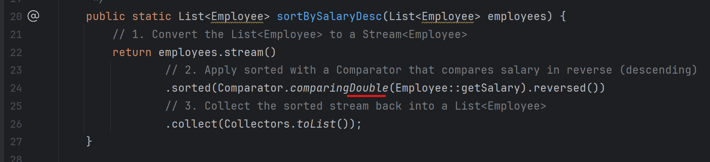
Pro Note: Comparator.comparingDouble
Peek: During a stream pipeline, log each element before and after applying a filter.
1. package org.demo.streams_api.a_few_basics;
2.
3. import java.util.Arrays;
4. import java.util.List;
5. import java.util.stream.Collectors;
6.
7. public class _7_Peek {
8. /**
9. * Sample Input:
10. * [1, 2, 3, 4, 5, 6]
11. *
12. * Expected Sample Output:
13. * "Even numbers: [2, 4, 6]"
14. */
15. public static String processNumbers(List<Integer> numbers) {
16. // 1. Begin a stream pipeline from the input list
17. return numbers.stream()
18. // 2. Log each element before the filter is applied
19. .peek(n -> System.out.println("Before filter: " + n))
20. // 3. Filter to retain only even numbers
21. .filter(n -> n % 2 == 0)
22. // 4. Log each element after the filter is applied
23. .peek(n -> System.out.println("After filter: " + n))
24. // 5. Collect the remaining elements into a list
25. .collect(Collectors.collectingAndThen(
26. Collectors.toList(),
27. evens -> "Even numbers: " + evens
28. ));
29. }
30.
31. public static void main(String[] args) {
32. // Generate sample input
33. List<Integer> input = Arrays.asList(1, 2, 3, 4, 5, 6);
34.
35. // Process the input and capture the result
36. String result = processNumbers(input);
37.
38. // Print the final result
39. System.out.println(result);
40. }
41. }
42.
Pro Note, the output below, it will not be in order. Means all the before logs will not print together:
1. Before filter: 1
2. Before filter: 2
3. After filter: 2
4. Before filter: 3
5. Before filter: 4
6. After filter: 4
7. Before filter: 5
8. Before filter: 6
9. After filter: 6
10. Even numbers: [2, 4, 6]
11.
Why so?
This behavior is exactly what the Stream API is designed to do: it doesn’t execute one whole stage (all the “before” peeks) and then another whole stage (all the “after” peeks). Instead, it processes each element end-to-end, one at a time, passing it through all intermediate stages before pulling the next element.
Concretely, for your sequential stream:
The terminal operation (the collect) requests the next element.
That element is sent down the pipeline:
peek(before) logs “Before filter: n”
filter tests n % 2 == 0
peek(after) logs “After filter: n” only if the filter passed
Only once that element has traversed every stage does the stream pull the next element.
So you see:
Before filter: 1 (1 fails the filter; no “After filter” for it)
Before filter: 2 → After filter: 2
Before filter: 3 (3 fails; no after)
Before filter: 4 → After filter: 4
…and so on.
If you wanted to group all the “before” logs together, you’d have to break the pipeline into two separate passes—first peeking and collecting or buffering all elements, then running the filter + after-peek on that collection. But that defeats the point of the one-pass, lazy, fused nature of streams.
Limit & Skip: From an infinite Stream.iterate(), skip the first 10 values and then take the next 5.
1. package org.demo.streams_api.a_few_basics;
2.
3. import java.util.stream.Stream;
4. import java.util.List;
5. import java.util.stream.Collectors;
6.
7. public class _8_Limit_and_Skip {
8.
9. /**
10. * Sample input: infinite sequence starting at 0:
11. * 0, 1, 2, 3, 4, 5, 6, 7, 8, 9, 10, 11, ...
12. *
13. * After skipping the first 10 and taking the next 5, the sample output is:
14. * [10, 11, 12, 13, 14]
15. */
16.
17. public static List<Integer> getSkippedAndLimitedSequence() {
18. // 1. Generate an infinite Stream of integers, starting from 0, incrementing by 1
19. Stream<Integer> infiniteStream = Stream.iterate(0, n -> n + 1);
20.
21. // 2. Skip the first 10 elements (i.e., 0 through 9)
22. Stream<Integer> skipped = infiniteStream.skip(10);
23.
24. // 3. Limit the stream to the next 5 elements (i.e., 10 through 14)
25. Stream<Integer> limited = skipped.limit(5);
26.
27. // 4. Collect the resulting elements into a List<Integer>
28. return limited.collect(Collectors.toList());
29.
30. // Or the above 4 steps can be done together as below:
31. // Generate an infinite stream, skip 10, take 5, then collect—all in one chain
32. // return Stream.iterate(0, n -> n + 1)
33. // .skip(10) // drop 0–9
34. // .limit(5) // keep next 5
35. // .collect(Collectors.toList());
36. }
37.
38. public static void main(String[] args) {
39. // Invoke the method and print out the result
40. List<Integer> result = getSkippedAndLimitedSequence();
41. System.out.println("Result: " + result);
42. // Expected console output:
43. // Result: [10, 11, 12, 13, 14]
44. }
45. }
46.
Pro Note: new concept
Stream.iterate
TakeWhile & DropWhile (Java 9+): From a sorted list of timestamps, take all entries until a certain cutoff time.
MapToInt / MapToDouble / MapToLong: Given a list of Order objects, calculate an IntStream of order quantities.
Boxed: Convert an IntStream of primes into a Stream<Integer>.
ForEach: Print each element of a stream of names to the console.
Collect to List / Set: Collect a stream of numbers greater than 100 into a Set<Integer>.
Collect to Map: Group a list of students into a Map<Grade, List<Student>> by their grade.
Collectors.joining: Concatenate a list of words into a single comma-separated string.
Collectors.summarizingInt: Compute count, sum, min, max, and average of a list of ages.
Collectors.partitioningBy: Partition a list of people into minors and adults.
Reduce: Use reduce() to compute the product of a list of doubles.
FindFirst / FindAny: From a parallel stream of integers, find any even number.
AnyMatch / AllMatch / NoneMatch: Check if all strings in a list are non-empty.
Optional.stream / Stream.ofNullable: Safely handle a possibly null List<String> and return a stream of its elements.
Concat: Merge two streams of user IDs into a single stream without duplicates.
Custom Collector: Implement a collector that builds a TreeSet<String> sorted by string length.
Primitive Stream Statistics: Using IntStream, compute summary statistics of a large numeric array.
Parallel Stream Pitfalls: Demonstrate with code how a non-thread-safe accumulator in collect() can produce incorrect results when run in parallel.
Stream.generate: Produce a stream of 20 random UUIDs.
Infinite Streams & Short-Circuiting: Generate an infinite Stream of natural numbers and find the first that is divisible by both 7 and 13.
Stream Reuse: Show why a stream cannot be reused, and propose a way to work around it.
Custom Spliterator: Write a custom Spliterator for a binary tree and use it to stream in-order traversal.
Performance Comparison: Benchmark filtering and mapping on a million-element list using sequential vs. parallel streams and report the timing.
Stream API Problems
TD: Use stream API to filter out even numbers
--------------------------------------------------------------------------------------------------------
Compare and find common words from 2 string
Given input 2 strings: “this is my world in some” and “World random text”, get the matched words using:
a. traditional method
b. using Java 8+ features
a. Traditional (pre–Java 8)
1. import java.util.*;
2.
3. public class TraditionalMatcher {
4. public static Set<String> findCommonWords(String s1, String s2) {
5. // split on whitespace, normalize to lower-case
6. String[] arr1 = s1.toLowerCase().split("\\s+");
7. String[] arr2 = s2.toLowerCase().split("\\s+");
8.
9. Set<String> set1 = new HashSet<>(Arrays.asList(arr1));
10. Set<String> common = new HashSet<>();
11.
12. // for each word in the second array, see if it's in set1
13. for (String word : arr2) {
14. if (set1.contains(word)) {
15. common.add(word);
16. }
17. }
18. return common;
19. }
20.
21. public static void main(String[] args) {
22. String s1 = "this is my world in some";
23. String s2 = "World random text";
24.
25. Set<String> matched = findCommonWords(s1, s2);
26. System.out.println("Common words: " + matched);
27. // → Common words: [world]
28. }
29. }
30.
How it works
Lower-cases both strings and splits on whitespace.
Builds a HashSet of words from the first string for O(1) lookups.
Iterates the second word array, checking membership and collecting matches.
b. Java 8+ Streams
1. import java.util.*;
2. import java.util.stream.*;
3.
4. public class StreamMatcher {
5. public static Set<String> findCommonWords(String s1, String s2) {
6. // build a set from s1
7. Set<String> words1 = Arrays.stream(s1.split("\\s+"))
8. .map(String::toLowerCase)
9. .collect(Collectors.toSet());
10.
11. // stream s2, filter by membership in words1, collect to set
12. return Arrays.stream(s2.split("\\s+"))
13. .map(String::toLowerCase)
14. .filter(words1::contains)
15. .collect(Collectors.toSet());
16. }
17.
18. public static void main(String[] args) {
19. String s1 = "this is my world in some";
20. String s2 = "World random text";
21.
22. Set<String> matched = findCommonWords(s1, s2);
23. System.out.println("Common words: " + matched);
24. // → Common words: [world]
25. }
26. }
27.
How it works
words1: stream over s1, normalize and collect into a Set.
Stream over s2, normalize, filter by words1::contains, and collect the result.
Both approaches yield the same result ([world]), but the Java 8+ version is more declarative and concise.
TD: Concat 2 Maps<String, Object>
Given 2 Map<String, Object> in Java. Then create 3 different program for the 3 criteria:
a. If we find a same key in both maps, then ignore the one in the other map
b. If we find a same key in both maps, and also if they are both number values, then add them up.
c. If we find a same key in both maps, and also if they are both string values, then concat them.
TD: Find all possible combinations for a sum
Given an input array: [1, 2, 3, 3, 5, 8] and then an input number example: 15. Find and return all possible combinations from the array which will add upto the given number 15.
--------------------------------------------------------------------------------------------------------
--------------------------------------------------------------------------------------------------------
QTD. What is CompletableFuture? And why is it required?
Q. What are the limitations of the traditional Future?
A. TO DO
CompletableFuture is a powerful feature introduced in Java 8 as part of the java.util.concurrent package. It enhances the capabilities of the traditional Future interface, allowing for more flexible and efficient asynchronous programming.
Why is CompletableFuture Required? | Limitations of the Traditional Future
While the original Future interface provided a way to handle asynchronous tasks, it had several limitations:
Manual Completion: Futures cannot be manually completed once created. If a task needs to be completed based on an external condition (e.g., an API call failure), it cannot be done with a standard Future.
Chaining Limitations: With Futures, you cannot chain multiple tasks together. If one task needs to feed into another, you must manage this manually, which complicates code readability and maintenance.
Combining Futures: Futures do not support combining multiple asynchronous tasks easily. For instance, if you want to run several tasks in parallel and then process their results together, this is cumbersome with Futures.
Poor Exception Handling: The Future API lacks built-in exception handling capabilities. You must catch exceptions during the retrieval of results, which can lead to unmanageable code in complex scenarios.
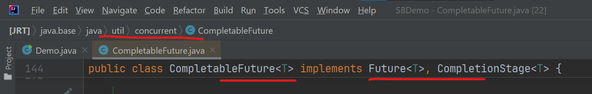
1. Manual Completion
Future Limitation: A standard Future’s result is determined solely by the task execution. You cannot “force” its completion based on external conditions.
CompletableFuture Advantage: You can manually complete a CompletableFuture using methods like complete() or completeExceptionally().
2. Chaining Asynchronous Operations
Future Limitation: To chain tasks with Future, you must block (using get()) and then start the next task manually. This breaks the asynchronous flow and clutters the code.
CompletableFuture Advantage: Chaining is built-in with methods like thenApply() and thenCompose(), enabling a smooth, non-blocking pipeline.
3. Combining Multiple Futures
Future Limitation: With Future, if you run tasks in parallel, you must wait (block) for each to finish and then combine their results manually.
CompletableFuture Advantage: Methods like thenCombine(), allOf(), or anyOf() allow you to merge multiple asynchronous results elegantly.
4. Exception Handling in Asynchronous Tasks
Future Limitation: When a task throws an exception, you must catch it after calling get(), which can lead to messy error handling.
CompletableFuture Advantage: Built-in methods like exceptionally() and handle() allow you to manage exceptions in a fluent, non-blocking manner.
----------------------------------------------------------------------------------------------------------
----------------------------------------------------------------------------------------------------------
----------------------------------------------------------------------------------------------------------
----------------------------------------------------------------------------------------------------------
QTD. What are the different ways to create a Thread? What is the recommended way to create a Thread?
A.
----------------------------------------------------------------------------------------------------------
----------------------------------------------------------------------------------------------------------
----------------------------------------------------------------------------------------------------------
----------------------------------------------------------------------------------------------------------
QTD. What are the different Thread states?
A.
----------------------------------------------------------------------------------------------------------
----------------------------------------------------------------------------------------------------------
----------------------------------------------------------------------------------------------------------
----------------------------------------------------------------------------------------------------------
QTD. Once a Thread is terminated, can I restart it?
A.
Yes, we can restart it, but it will be a new thread and not the old one.
----------------------------------------------------------------------------------------------------------
----------------------------------------------------------------------------------------------------------
----------------------------------------------------------------------------------------------------------
----------------------------------------------------------------------------------------------------------
QTD. What is race condition?
A.
----------------------------------------------------------------------------------------------------------
----------------------------------------------------------------------------------------------------------
----------------------------------------------------------------------------------------------------------
----------------------------------------------------------------------------------------------------------
QTD. Interlocking | How to fix race condition?
Q. What is interlocking?
A.
----------------------------------------------------------------------------------------------------------
----------------------------------------------------------------------------------------------------------
----------------------------------------------------------------------------------------------------------
----------------------------------------------------------------------------------------------------------
QTD. What is Deadlock?
A.
----------------------------------------------------------------------------------------------------------
----------------------------------------------------------------------------------------------------------
----------------------------------------------------------------------------------------------------------
----------------------------------------------------------------------------------------------------------
QTD. How to prevent Deadlock?
A.
----------------------------------------------------------------------------------------------------------
----------------------------------------------------------------------------------------------------------
----------------------------------------------------------------------------------------------------------
----------------------------------------------------------------------------------------------------------
QTD. run() vs start() vs execute()
A.
----------------------------------------------------------------------------------------------------------
----------------------------------------------------------------------------------------------------------
----------------------------------------------------------------------------------------------------------
----------------------------------------------------------------------------------------------------------
QTD. How to create a thread-safe Singleton class in Java?
A.
----------------------------------------------------------------------------------------------------------
----------------------------------------------------------------------------------------------------------
----------------------------------------------------------------------------------------------------------
----------------------------------------------------------------------------------------------------------
QTD. What is locking?
A.
----------------------------------------------------------------------------------------------------------
----------------------------------------------------------------------------------------------------------
----------------------------------------------------------------------------------------------------------
----------------------------------------------------------------------------------------------------------
QTD. What is Reentrant Locking?
A.
----------------------------------------------------------------------------------------------------------
----------------------------------------------------------------------------------------------------------
----------------------------------------------------------------------------------------------------------
----------------------------------------------------------------------------------------------------------
QTD. What is Stampede Locking?
A.
----------------------------------------------------------------------------------------------------------
----------------------------------------------------------------------------------------------------------
----------------------------------------------------------------------------------------------------------
----------------------------------------------------------------------------------------------------------
----------------------------------------------------------------------------------------------------------
----------------------------------------------------------------------------------------------------------
----------------------------------------------------------------------------------------------------------
----------------------------------------------------------------------------------------------------------
----------------------------------------------------------------------------------------------------------
----------------------------------------------------------------------------------------------------------
----------------------------------------------------------------------------------------------------------
----------------------------------------------------------------------------------------------------------
----------------------------------------------------------------------------------------------------------
----------------------------------------------------------------------------------------------------------
----------------------------------------------------------------------------------------------------------
----------------------------------------------------------------------------------------------------------
--------------------------------------------------------------------------------------------------------
TD. Explain the JVM Architecture
A.
Overview:
The Java Virtual Machine (JVM) architecture includes several key components for running Java programs.
The main components are Class Loader, Runtime Memory Areas, Execution Engine, Garbage Collector, and Java Native Interface.
These components work together to load, execute, and manage Java applications efficiently.
JVM’s 5 main Components:
1. Class Loader
2. Runtime Memory Areas
3. Execution Engine
4. Garbage Collector
5. Java Native Interface (JNI)
1. Class Loader
This part loads Java classes into the JVM. It includes:
Bootstrap Class Loader: Loads core Java classes, like those in the Java Runtime Environment.
Extension/Platform Class Loader: Loads additional libraries, often from specific directories.
Application Class Loader: Loads the classes you write for your application.
Note: In Java 9 and later, the Extension Class Loader is called the Platform Class Loader, reflecting changes in how classes are managed.
2. Runtime Memory Areas
These are memory spaces used while the program runs:
Heap Memory: Stores objects created during execution.
Stack Area: Manages method calls and local variables for each thread.
Method Area: Holds method code and static variables, shared across threads.
Program Counter (PC) Register: Tracks the current instruction being executed for each thread.
Native Method Stack: Handles native methods, which are written in languages like C or C++.
3. Execution Engine
This executes the Java bytecode:
Interpreter: Reads and runs bytecode line by line, which can be slower for repeated tasks.
Just-in-Time (JIT) Compiler: Compiles frequently used code into machine code for faster performance.
4. Garbage Collector
This automatically frees up memory by removing unused objects:
Serial Garbage Collector: Uses one thread, best for small, single-threaded applications.
Parallel Garbage Collector: Uses multiple threads, suitable for multi-core systems.
Other types include Concurrent Mark-Sweep, G1, Z, and Shenandoah, each designed for different needs like low pause times or large heaps.
5. Java Native Interface (JNI)
This allows Java to interact with code written in other languages, mainly C and C++, and potentially others with C APIs, enabling access to system-specific features.
Let’s explore these in details now (only from interview point of view):
1. Class Loader
2. Runtime Memory Areas
3. Execution Engine
4. Garbage Collector
5. Java Native Interface (JNI)
----------------------------------------------------------------------------------------------------------
----------------------------------------------------------------------------------------------------------
----------------------------------------------------------------------------------------------------------
----------------------------------------------------------------------------------------------------------
TD. What are the 4 reference types in context of Java Garbage Collector (GC)?
A. TO DO
Java provides four types of references under the java.lang.ref package:
Strong Reference (Hard Reference) - Default
Soft Reference - Used for Caching
Weak Reference - Used for WeakHashMap
Phantom Reference - Used for Pre-GC Cleanup
----------------------------------------------------------------------------------------------------------
----------------------------------------------------------------------------------------------------------
----------------------------------------------------------------------------------------------------------
----------------------------------------------------------------------------------------------------------
What does the statement “memory is managed in Java” mean?
References:
Memory is the key resource an application requires to run effectively and like any resource, it is scarce. As such, its allocation and deallocation to and from applications or different parts of an application require a lot of care and consideration.
However, in Java, a developer does not need to explicitly allocate and deallocate memory – the JVM and more specifically the Garbage Collector – has the duty of handling memory allocation so that the developer does not have to.
This is contrary to what happens in languages like C where a programmer has direct access to memory and literally references memory cells in his code, creating a lot of room for memory leaks.
What is garbage collection and what are its advantages?
References:
https://www.baeldung.com/java-memory-management-interview-questions
Garbage collection is the process of looking at heap memory, identifying which objects are in use and which are not, and deleting the unused objects.
An in-use object, or a referenced object, means that some part of your program still maintains a pointer to that object. An unused object, or unreferenced object, is no longer referenced by any part of your program. So, the memory used by an unreferenced object can be reclaimed.
The biggest advantage of garbage collection is that it removes the burden of manual memory allocation/deallocation from us so that we can focus on solving the problem at hand.
Are there any disadvantages of garbage collection?
References:
https://www.baeldung.com/java-memory-management-interview-questions
Yes. Whenever the garbage collector runs, it has an effect on the application’s performance. This is because all other threads in the application must be stopped to allow the garbage collector thread to effectively do its work.
Depending on the requirements of the application, this can be a real problem that is unacceptable by the client. However, this problem can be greatly reduced or even eliminated through skilful optimization and garbage collector tuning and using different GC algorithms.
What is the meaning of the term “Stop-The-World”?
References:
https://www.baeldung.com/java-memory-management-interview-questions
When the garbage collector thread is running, other threads are stopped, meaning the application is stopped momentarily. This is analogous to house cleaning or fumigation where occupants are denied access until the process is complete.
Depending on the needs of an application, “stop the world” garbage collection can cause an unacceptable freeze. This is why it is important to do garbage collector tuning and JVM optimization so that the freeze encountered is at least acceptable.
What are Stack and Heap? What is stored in each of these memory structures, and how are they interrelated?
References:
https://www.baeldung.com/java-memory-management-interview-questions
The stack is a part of memory that contains information about nested method calls down to the current position in the program. It also contains all local variables and references to objects on the heap defined in currently executing methods.
This structure allows the runtime to return from the method knowing the address whence it was called, and also clear all local variables after exiting the method. Every thread has its own stack.
The heap is a large bulk of memory intended for allocation of objects. When you create an object with the new keyword, it gets allocated on the heap. However, the reference to this object lives on the stack.
What Is Generational Garbage Collection and what makes it a popular Garbage Collection approach?
References:
https://www.baeldung.com/java-memory-management-interview-questions
Generational garbage collection can be loosely defined as the strategy used by the garbage collector where the heap is divided into a number of sections called generations, each of which will hold objects according to their “age” on the heap.
Whenever the garbage collector is running, the first step in the process is called marking. This is where the garbage collector identifies which pieces of memory are in use and which are not. This can be a very time-consuming process if all objects in a system must be scanned.
As more and more objects are allocated, the list of objects grows and grows leading to longer and longer garbage collection time. However, empirical analysis of applications has shown that most objects are short-lived.
With generational garbage collection, objects are grouped according to their “age” in terms of how many garbage collection cycles they have survived. This way, the bulk of the work spread across various minor and major collection cycles.
Today, almost all garbage collectors are generational. This strategy is so popular because, over time, it has proven to be the optimal solution.
Describe in detail how Generational Garbage Collection works
References:
https://www.baeldung.com/java-memory-management-interview-questions
To properly understand how generational garbage collection works, it is important to first remember how Java heap is structured to facilitate generational garbage collection.
The heap is divided up into smaller spaces or generations. These spaces are Young Generation, Old or Tenured Generation, and Permanent Generation.
The young generation hosts most of the newly created objects. An empirical study of most applications shows that majority of objects are quickly short lived and therefore, soon become eligible for collection. Therefore, new objects start their journey here and are only “promoted” to the old generation space after they have attained a certain “age”.
The term “age” in generational garbage collection refers to the number of collection cycles the object has survived.
The young generation space is further divided into three spaces: an Eden space and two survivor spaces such as Survivor 1 (s1) and Survivor 2 (s2).
The old generation hosts objects that have lived in memory longer than a certain “age”. The objects that survived garbage collection from the young generation are promoted to this space. It is generally larger than the young generation. As it is bigger in size, the garbage collection is more expensive and occurs less frequently than in the young generation.
The permanent generation or more commonly called, PermGen, contains metadata required by the JVM to describe the classes and methods used in the application. It is populated by the JVM at runtime based on classes in use by the application. In addition, platform library classes and methods may be stored here.
First, any new objects are allocated to the Eden space. Both survivor spaces start out empty. When the Eden space fills up, a minor garbage collection is triggered. Referenced objects are moved to the first survivor space. Unreferenced objects are deleted.
During the next minor GC, the same thing happens to the Eden space. Unreferenced objects are deleted and referenced objects are moved to a survivor space. However, in this case, they are moved to the second survivor space (S2).
In addition, objects from the last minor GC in the first survivor space (S1) have their age incremented and are moved to S2. Once all surviving objects have been moved to S2, both S1 and Eden space are cleared. At this point, S2 contains objects with different ages.
At the next minor GC, the same process is repeated. However, this time the survivor spaces switch. Referenced objects are moved to S1 from both Eden and S2. Surviving objects are aged. Eden and S2 are cleared.
After every minor garbage collection cycle, the age of each object is checked. Those that have reached a certain arbitrary age, for example, 8, are promoted from the young generation to the old or tenured generation. For all subsequent minor GC cycles, objects will continue to be promoted to the old generation space.
This pretty much exhausts the process of garbage collection in the young generation. Eventually, a major garbage collection will be performed on the old generation which cleans up and compacts that space. For each major GC, there are several minor GCs.
When does an object become eligible for Garbage Collection? Describe how the GC collects an eligible object?
How to make our objects eligible for garbage collection?
References:
https://www.baeldung.com/java-memory-management-interview-questions
An object becomes eligible for Garbage collection or GC if it is not reachable from any live threads or by any static references.
Option 1: Set the object reference to null:
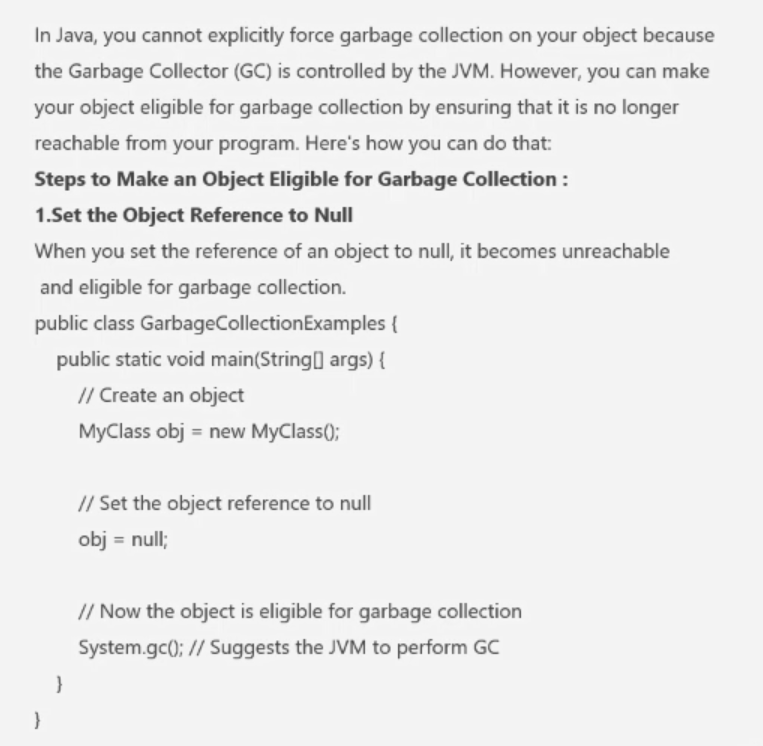
The most straightforward case of an object becoming eligible for garbage collection is if all its references are null.
Another obvious case is when a parent object is set to null. When a kitchen object internally references a fridge object and a sink object, and the kitchen object is set to null, both fridge and sink will become eligible for garbage collection alongside their parent, kitchen.
Option 2: Deference cyclic dependencies:
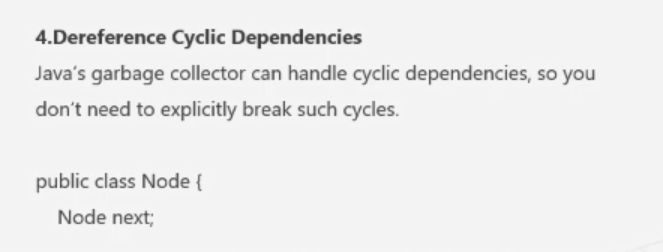 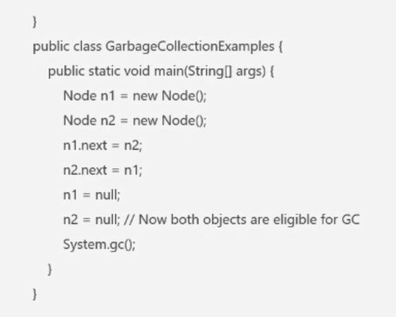Cyclic dependencies without any live external reference are also eligible for GC. So, if object A references object B and object B references Object A and they do not have any other live reference then both Objects A and B will be eligible for Garbage collection.
Option 3: Reassign the reference:
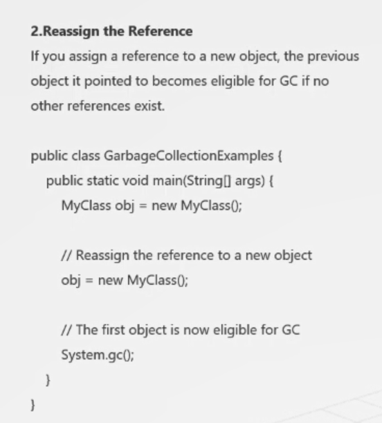
Option 4: Objects inside a method (local scope):
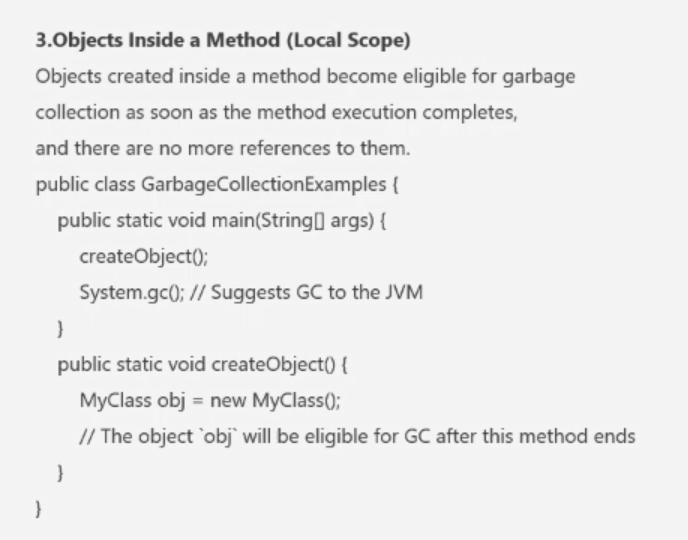
How do you trigger Garbage Collection from Java code?
References:
https://www.baeldung.com/java-memory-management-interview-questions
You, as Java programmer, cannot force garbage collection in Java; it will only trigger if JVM thinks it needs a garbage collection based on Java heap size.
Before removing an object from memory garbage collection thread invokes finalize() method of that object and gives an opportunity to perform any sort of cleanup required. You can also invoke this method of an object code, however, there is no guarantee that garbage collection will occur when you call this method.
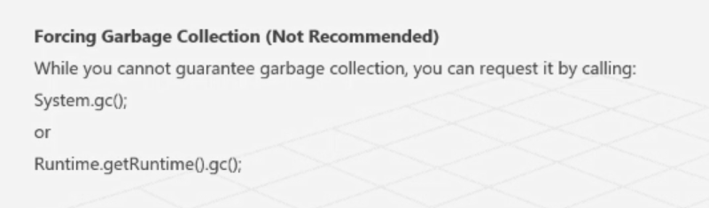
Additionally, there are methods like System.gc() and Runtime.gc() which is used to send request of Garbage collection to JVM but it is not guaranteed that garbage collection will happen.
What happens when there is not enough Heap space to accommodate storage of new objects?
References:
https://www.baeldung.com/java-memory-management-interview-questions
If there is no memory space for creating a new object in Heap, Java Virtual Machine throws OutOfMemoryError or more specifically java.lang.OutOfMemoryError heap space.
Is it possible to «Resurrect» an object that became eligible for Garbage Collection?
References:
https://www.baeldung.com/java-memory-management-interview-questions
When an object becomes eligible for garbage collection, the GC has to run the finalize method on it. The finalize method is guaranteed to run only once, thus the GC flags the object as finalized and gives it a rest until the next cycle.
In the finalize method you can technically “resurrect” an object, for example, by assigning it to a static field. The object would become alive again and non-eligible for garbage collection, so the GC would not collect it during the next cycle.
The object, however, would be marked as finalized, so when it would become eligible again, the finalize method would not be called. In essence, you can turn this “resurrection” trick only once for the lifetime of the object. Beware that this ugly hack should be used only if you really know what you are doing — however, understanding this trick gives some insight into how the GC works.
Note:
Object.finalize() has been deprecated for removal and is effectively on its way out:
In the Java 21 API spec, Object.finalize() is annotated
1. @Deprecated(since="9", forRemoval=true)
2. protected void finalize() throws Throwable
3.
Alternatives
try-with-resources / AutoCloseable for deterministic resource cleanup
java.lang.ref.Cleaner (since Java 9) for safe, GC-based cleanup without the pitfalls of finalization
PTD. Describe strong, weak, soft, and phantom references and their role in Garbage Collection.
PTD (Partial TO DO):
1. The real-world use cases/examples are not very clear.
References:
https://www.baeldung.com/java-memory-management-interview-questions
Summary:
Strong reference: It will not be eligible for GC unless it is nullified.
Weak reference: This will be freed up as soon as the GC runs.
Soft reference: This will be freed if only if the GC is running out of Heap memory space.
Phantom reference:
Much as memory is managed in Java, an engineer may need to perform as much optimization as possible to minimize latency and maximize throughput, in critical applications.
Much as it is impossible to explicitly control when garbage collection is triggered in the JVM, it is possible to influence how it occurs as regards the objects we have created.
Java provides us with reference objects to control the relationship between the objects we create and the garbage collector.
Strong Reference:
By default, every object we create in a Java program is strongly referenced by a variable:
1. StringBuilder sb = new StringBuilder();
2.
In the above snippet, the new keyword creates a new StringBuilder object and stores it on the heap. The variable sb then stores a strong reference to this object. What this means for the garbage collector is that the particular StringBuilder object is not eligible for collection at all due to a strong reference held to it by sb. The story only changes when we nullify sb like this:
1. sb = null;
2.
After calling the above line, the object will then be eligible for collection.
We can change this relationship between the object and the garbage collector by explicitly wrapping it inside another reference object which is located inside java.lang.ref package.
Weak Reference:
A weak reference can be created using WeakReference class. When sb is set to null and the StringBuilder object only has a weak reference, the JVM’s garbage collector will have absolutely no compromise and immediately collect the object at the very next cycle.
1. WeakReference<StringBuilder> weakSb =
2. new WeakReference<>(new StringBuilder("hello"));
3. weakSb = null;
what does weak means
weak means that as soon as the garbage collector get invoked it will be freed up this space.
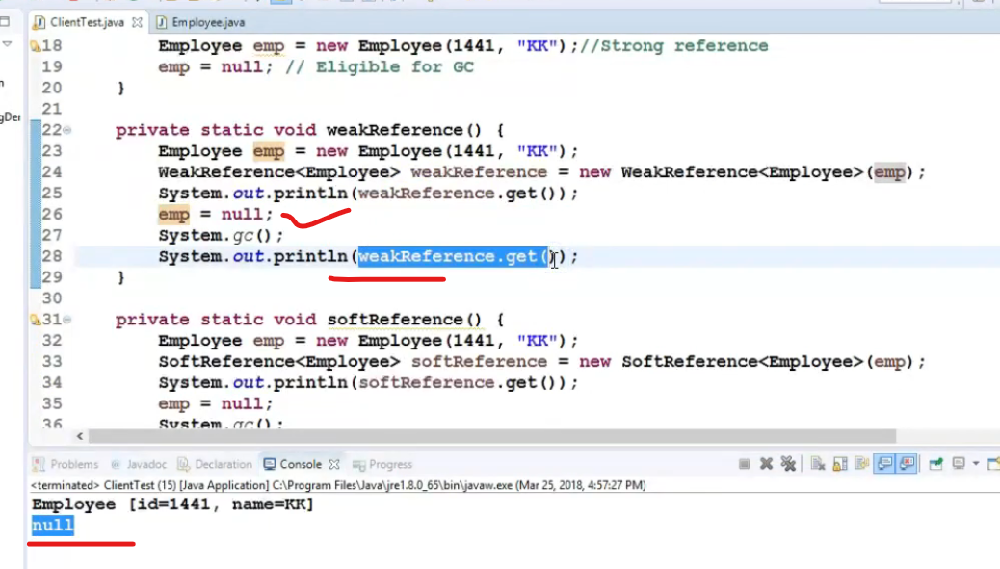
Here we can see that as soon as the GC ran, it was garbage collected.
Real use cases of weak reference:
1. Memory-sensitive Caches
You want a cache that holds onto objects for fast lookup, but you do not want the cache itself to keep them alive when memory gets tight.
Scenario: You have a cache that stores computed results or metadata associated with certain objects. You want these cached entries to be automatically removed when the original objects they relate to are no longer strongly referenced by your application. If you used a regular HashMap, the keys in the map would hold strong references, preventing the objects from being garbage collected even if no other part of your code uses them.
WeakHashMap: This is the most common and direct use case. WeakHashMap is a Map implementation where the keys are held by weak references. If a key object in a WeakHashMap becomes only weakly reachable (meaning no strong references point to it), that entry (key and its associated value) will be automatically removed from the map during the next garbage collection cycle.
1. class ThumbnailCache {
2. private final ConcurrentMap<String, WeakReference<BufferedImage>> thumbs = new ConcurrentHashMap<>();
3.
4. public BufferedImage getThumbnail(String imagePath) {
5. WeakReference<BufferedImage> ref = thumbs.get(imagePath);
6. BufferedImage img = (ref != null) ? ref.get() : null;
7.
8. if (img == null) {
9. img = createThumbnail(imagePath);
10. thumbs.put(imagePath, new WeakReference<>(img));
11. }
12. return img;
13. }
14. }
15.
2. Listener and Callback Registries
In many event-driven systems—GUIs, server-side callbacks, or custom event buses—listeners register themselves with a central publisher. If the listener forgets to unregister, the publisher’s strong reference prevents it from ever being collected, causing a memory leak.
By storing listeners as WeakReferences, the publisher:
Calls weakRef.get() when dispatching events.
Automatically drops listeners when they are no longer in use elsewhere.
Avoids manual bookkeeping or complex shutdown hooks.
1. public class EventBus {
2. private final List<WeakReference<EventListener>> listeners = new ArrayList<>();
3.
4. public void register(EventListener listener) {
5. listeners.add(new WeakReference<>(listener));
6. }
7.
8. public void fireEvent(Event e) {
9. Iterator<WeakReference<EventListener>> it = listeners.iterator();
10. while (it.hasNext()) {
11. EventListener lst = it.next().get();
12. if (lst != null) {
13. lst.onEvent(e);
14. } else {
15. it.remove(); // listener has been Garbage Collected
16. }
17. }
18. }
19. }
20.
3. Canonicalizing Mappings
When you want to maintain a single shared instance of a value across your application—say, for interning strings or flyweight objects—you can use a WeakHashMap:
Key: the object you would normally intern (e.g., file path, configuration descriptor).
Value: the canonical instance or metadata.
When the key is no longer in use elsewhere, the map entry vanishes automatically
1. Map<Path, ParsedConfig> cache = new WeakHashMap<>();
2.
3. public ParsedConfig getConfig(Path file) {
4. return cache.computeIfAbsent(file, f -> parseConfig(f));
5. }
6.
Soft Reference:
A soft reference can be created to the above object like this:
1. SoftReference<StringBuilder> sbRef = new SoftReference<>(new StringBuilder());
3. sbRef = null;
4.
In the above snippet, we have created two references to the StringBuilder object. The first line creates a strong reference sb and the second line creates a soft reference sbRef. The third line should make the object eligible for collection but the garbage collector will postpone collecting it because of sbRef.
The story will only change when memory becomes tight and the JVM is on the brink of throwing an OutOfMemory error. In other words, objects with only soft references are collected as a last resort to recover memory.
Soft reference is a type of weak reference.
what it tells is hey garbage collector you are allowed to feed it up even though I have a soft reference but only do it when it is very very very urgent.
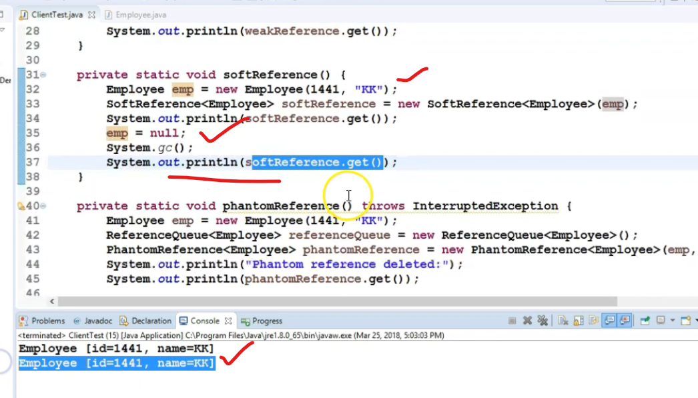
Even if the parent strong reference object is made null here, but still the soft reference will stay in the memory till JVM runs out of memory and then it will be garbage collected.
Real use cases of soft reference:
1. Large Memory-Sensitive Caches
Use case: You have data that is expensive to recompute or reload (e.g. decoded images, rendered thumbnails, parsed documents), but you do not want your cache to cause OutOfMemoryErrors.
1. import java.lang.ref.SoftReference;
2. import java.util.concurrent.ConcurrentHashMap;
3. import java.util.Map;
4.
5. public class ThumbnailCache {
6. // key: image ID; value: soft reference to the thumbnail bytes
7. private final Map<String, SoftReference<byte[]>> cache = new ConcurrentHashMap<>();
8.
9. public void put(String id, byte[] thumbData) {
10. cache.put(id, new SoftReference<>(thumbData));
11. }
12.
13. public byte[] get(String id) {
14. SoftReference<byte[]> ref = cache.get(id);
15. return (ref != null) ? ref.get() : null;
16. }
17. }
18.
Behavior: Under normal conditions your thumbs stay in cache. Only when the JVM is under memory pressure will older or less-recent entries be reclaimed automatically.
2. In-Memory Data Memoization
Use case: You compute expensive function results (e.g. big matrix inversions, complex queries) that you want to memoize—but you would rather let them go if memory runs low.
1. import java.lang.ref.SoftReference;
2. import java.util.Map;
3. import java.util.concurrent.ConcurrentHashMap;
4. import java.util.function.Function;
5.
6. public class Memoizer<I, O> {
7. private final Map<I, SoftReference<O>> cache = new ConcurrentHashMap<>();
8. private final Function<I, O> compute;
9.
10. public Memoizer(Function<I, O> compute) {
11. this.compute = compute;
12. }
13.
14. public O get(I input) {
15. SoftReference<O> ref = cache.get(input);
16. O result = (ref != null) ? ref.get() : null;
17. if (result == null) {
18. result = compute.apply(input);
19. cache.put(input, new SoftReference<>(result));
20. }
21. return result;
22. }
23. }
24.
Benefit: You get memoization “for free” but avoid unbounded growth—older entries vanish under memory strain.
3. Web Application Session Caching
Use case: In a servlet container or microservice you might cache user-session payloads, prepared view-models, or partial page fragments.
1. // Pseudo-servlet code
2. SoftReference<MyViewModel> viewModelRef = session.getAttribute("viewModelRef");
3. MyViewModel vm = (viewModelRef != null) ? viewModelRef.get() : null;
4. if (vm == null) {
5. vm = buildViewModel(userData);
6. session.setAttribute("viewModelRef", new SoftReference<>(vm));
7. }
8. // render(vm);
9.
Why soft? Under heavy load or many concurrent sessions, the container will reclaim old session caches first when memory gets tight, preventing OOM.
4. Image-Processing Pipelines
When processing large batches of images (e.g. thumbnails, filters), you can keep intermediate buffers in soft refs:
1. SoftReference<BufferedImage> bufferRef = new SoftReference<>(largeImage);
2. // ... do some steps ...
3. BufferedImage buf = bufferRef.get();
4. if (buf == null) {
5. // regenerate buffer if it was collected
6. buf = regenerateBuffer(largeImage);
7. }
8.
This approach smooths out memory spikes—buffers disappear under pressure, but are cheap to recreate.
5. Database Connection Pools
Scenario: Systems managing reusable resources, such as database connections or thread pools, need to optimize resource retention without overconsuming memory.
Why Soft References?: Idle connections or resources can be held with soft references, keeping them available for reuse. Under memory pressure, these resources are reclaimed, dynamically reducing the pool size.
Example: A web application’s database connection pool could use soft references for idle connections. This ensures efficient reuse during normal operation, but releases unused connections during peak load or memory constraints.
Why not just use a library cache?
Modern caching libraries (Guava Cache, Caffeine, Ehcache) let you configure size‐ or time‐based eviction more predictably. But soft references remain a zero-configuration way to lean on the JVM’s own memory heuristics, which can be simpler for small apps or one-off caches.
Phantom Reference:
A phantom reference is similar to a weak reference and an object with only phantom references will be collected without waiting. However, phantom references are enqueued as soon as their objects are collected. We can poll the reference queue to know exactly when the object was collected.
Pro – check the below question
What is Phantom Reference?
Section 1: Exploring Weak References and Their Limitations Weak references are references that allow objects to be collected if no strong references point to them. While they are useful in certain scenarios, they do not offer a reliable way to determine if an object is about to be collected. The garbage collector can collect an object referenced by a weak reference at any time when it becomes eligible, without any prior notice.
Section 2: Introducing Phantom References Phantom References are a special type of weak reference that provides a more precise way to track objects nearing garbage collection. Unlike weak references, they are enqueued in a reference queue when the object they refer to becomes phantom reachable. This feature allows developers to perform cleanup actions before the object is finally removed from memory.
To create a Phantom Reference, developers use the java.lang.ref.PhantomReference class, passing the target object and a reference queue as parameters. When the object becomes eligible for garbage collection, the garbage collector enqueues the Phantom Reference to the specified reference queue.
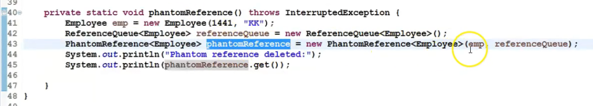
We cannot get a referent (means the “emp” object above in line 43) of a phantom reference. The referent is never accessible directly through the API and this is why we need a reference queue to work with this type of references.
The Garbage Collector adds a phantom reference to a reference queue after the finalize method of its referent is executed. It implies that the instance is still in the memory.
Phantom references are the most specialized Java reference type. Their referents are never accessible through the API and must be used with a ReferenceQueue. Once the garbage collector determines an object is phantom-reachable—after its finalize() method has run—it enqueues the corresponding PhantomReference for you to process cleanup tasks before memory is reclaimed.
PhantomReference Characteristics
Aspect | PhantomReference |
Referent Access | Always returns null via get() |
Enqueue Trigger | After finalize() and just before reclamation |
Main Mechanism | ReferenceQueue–driven callbacks |
Ideal for | Deterministic cleanup, avoiding resurrection |
Java 9+ Alternative | java.lang.ref.Cleaner / java.util.Cleaner |
Note:
Looking ahead, Java 9’s Cleaner API builds on phantom references under the hood, offering a simpler, thread-safe way to register cleanup actions without dealing directly with ReferenceQueue. If you are on Java 9+, consider Cleaner for new development—it wraps the same semantics in a more user-friendly API.
Real use cases of phantom reference:
Use phantom references when you need ultra-precise, GC-driven notifications to free or close non-Java resources that the JVM will not manage for you.
1. Precise Post-Mortem Cleanup for Resource Deallocation
In systems that manage critical external resources (off-heap memory, direct ByteBuffers, native handles), relying on finalize() is unreliable and can introduce resurrection pitfalls. By registering a phantom reference with a ReferenceQueue, you can:
Detect exactly when the JVM has finalized the object.
Perform deterministic cleanup (free native buffers, close OS handles).
Avoid unpredictable GC‐driven delays or resurrection issues.
This pattern provides a flexible, callback-driven cleanup mechanism that surpasses the limitations of finalizers.
2. Avoiding Finalization Pitfalls
finalize() methods can resurrect objects by reassigning strong references during finalization. This forces at least two GC cycles before the object truly dies and can delay memory reclamation, sometimes triggering unexpected OutOfMemoryErrors. Phantom references sidestep this entirely: the object is guaranteed not to be resurrected, and you get a single, unambiguous notification when it is eligible for reclamation.
3. Preventing OutOfMemoryError in Memory-Intensive Workflows
Consider an image-processing pipeline that loads and processes very large bitmaps. To avoid running out of heap, you might want to delay loading a new image until the previous one is fully cleaned up by the GC. A PhantomReference lets you:
Wrap each loaded image in a phantom reference.
Enqueue it on a ReferenceQueue when it’s finalized.
Wait on that queue before allocating the next large image.
This ensures you never accumulate multiple huge images in memory simultaneously, reducing OutOfMemoryError risk in high-throughput systems.
4. File Deletion Utilities (Commons-IO Example)
Apache Commons IO’s FileCleaningTracker uses phantom references to delete files when corresponding marker objects are garbage-collected. You:
Associate each temporary file with a lightweight “marker” object.
Create a PhantomReference<Marker> registered to a ReferenceQueue.
When the marker is enqueued, automatically delete its file on disk.
This hands off file-lifecycle management to the GC without explicit close/unregister calls in user code.
5. Custom Memory Profiling and Leak Detection
In specialized memory profilers, phantom references can track exactly when objects are destroyed. By enqueuing phantom references and monitoring their lifecycle, you can collect precise statistics on object death timings, validate that no unexpected strong references remain, and detect memory leaks in testing or production diagnostics.
TD. Suppose we have a circular reference (two objects that reference each other). Could such pair of objects become eligible for Garbage Collection and why?
References:
https://www.baeldung.com/java-memory-management-interview-questions
Yes, a pair of objects with a circular reference can become eligible for garbage collection. This is because of how Java’s garbage collector handles circular references.
It considers objects live not when they have any reference to them, but when they are reachable by navigating the object graph starting from some garbage collection root (a local variable of a live thread or a static field). If a pair of objects with a circular reference is not reachable from any root, it is considered eligible for garbage collection.
TD. How are Strings represented in memory?
References:
https://www.baeldung.com/java-memory-management-interview-questions
A String instance in Java is an object with two fields: a char[] value field and an int hash field. The value field is an array of chars representing the string itself, and the hash field contains the hashCode of a string which is initialized with zero, calculated during the first hashCode() call and cached ever since. As a curious edge case, if a hashCode of a string has a zero value, it has to be recalculated each time the hashCode() is called.
Important thing is that a String instance is immutable: you cannot get or modify the underlying char[] array. Another feature of strings is that the static constant strings are loaded and cached in a string pool. If you have multiple identical String objects in your source code, they are all represented by a single instance at runtime.
TD. What is a Stringbuilder and what are its use cases? What is the difference between appending a String to a Stringbuilder and concatenating two Strings with a + operator? How does Stringbuilder differ from Stringbuffer?
References:
https://www.baeldung.com/java-memory-management-interview-questions
StringBuilder allows manipulating character sequences by appending, deleting, and inserting characters and strings. This is a mutable data structure, as opposed to the String class which is immutable.
When concatenating two String instances, a new object is created, and strings are copied. This could bring a huge garbage collector overhead if we need to create or modify a string in a loop. StringBuilder allows handling string manipulations much more efficiently.
StringBuffer is different from StringBuilder in that it is thread-safe. If you need to manipulate a string in a single thread, use StringBuilder instead.
TD. How to configure which GC to use?
TD. How to detect and fix memory leaks?
--------------------------------------------------------------------------------------------------------
--------------------------------------------------------------------------------------------------------
--------------------------------------------------------------------------------------------------------
--------------------------------------------------------------------------------------------------------
--------------------------------------------------------------------------------------------------------
Thanks for Reading!